大创造时代
Age of Innovation · 非官方中文规则书全文转录
本页整理自微信公众号「桌游怎么玩」《大创造时代，神秘大地，Age of Innovation【桌游规则-简体中文-非官方】》发布的《Age of Innovation》非官方简体中文规则书（Helge Ostertag 设计，Feuerland 出版，中文翻译&排版：陈斌华，全书 24 页含封面），逐页全文转录，原书扫描图随文嵌入——点击任意图片即可放大查看。规则内容归 Feuerland Verlagsgesellschaft、Capstone Games 及版权方所有，转录仅供个人学习查阅。
整理说明：页面标题从 BGA 译名「大创造时代」，书内译者题名《创新时代》，本页侧栏与题图保留两种称谓；此为玩家非官方译本（陈斌华翻译排版），非出版社官方中文规则书。原书排印问题较多，均照录并加〔原文如此〕：P.4 公共设置步骤印制顺序为 ①③②④；「放置游戏版图上的」缺「在」（P.4）、「规划显示」（P.5）、「7 个学者和 3 桥梁」缺量词（P.6）、「相邻、一旦」（P.8）、「然而，然而」「免费黑桃」（P.9）、「都分布需要」（P.10）、「都以及略过」「执行你想要任何行动」（P.11）、「搬出地形格」「1 粽子书本」（P.13）、「未来激活」（P.15）、「TRADEING ROUTES」（P.16）、「Mike Martins, 7Nathan Morse」（衍字 7，P.17 Credits 原书即如此）、「Cincinatti」（P.17）、「立即进入有结束」（P.17）、「其他 3 为玩家」「地位标记笔其他所有人」、科学计分第三名正文印「4 分」而版图照片印「3.→2」（P.18）、「提升到货超过 8 级」（P.19）、「应用与 12 级」「在游戏开始时。」、奥马尔段首误植「航海家」（P.20）、「每当你建筑公会时」（P.23）、P.24 两个附录标题均误印「附录 VI」（按目录应为附录 VIII/IX）、「法工程学科」「其他其他」等。〔图 …〕说明与个别小节标题为整理所拟。
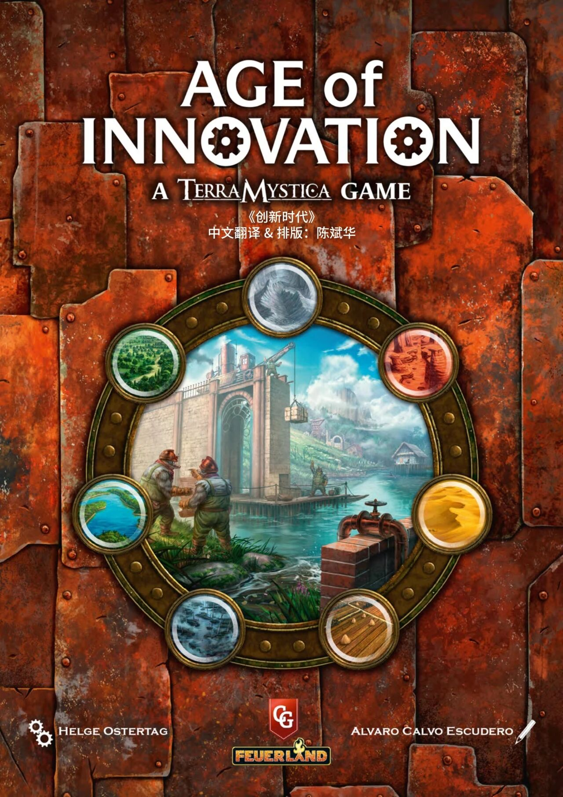
封面
AGE of INNOVATION
A TERRAMYSTICA GAME
《创新时代》
中文翻译 & 排版：陈斌华
〔图 封面主视觉——锈红色铆接金属背景中央一个圆形舷窗式画框，画中为河畔工地场景（塔吊、砖墙、缆车、远处的城镇），画框周围环绕 7 枚圆形地形徽章（白/灰、绿、红棕、蓝、黄、深蓝黑、浅棕木色）〕
Helge Ostertag（左下角，旁有齿轮组合图标）
Alvaro Calvo Escudero（右下角，旁有羽毛笔图标）
〔图 底部中央出版商标识——盾形"CG"标志（Capstone Games 风格）及其下方黄色"FEUERLAND"字样标志〕
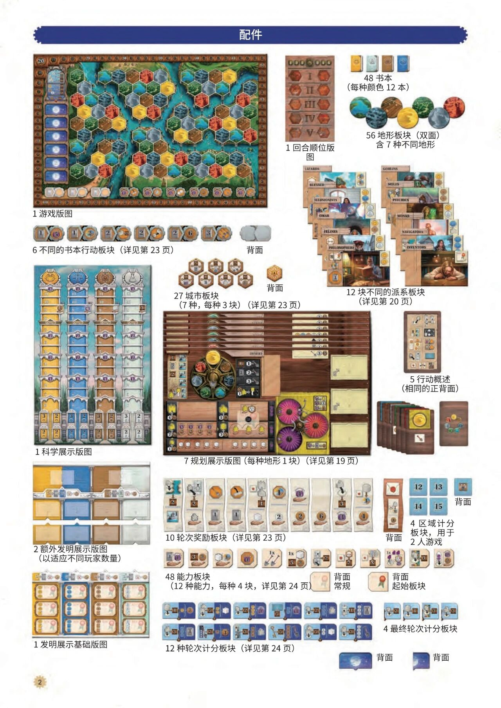
配件
〔图 蓝色横幅标题"配件"，下方为整页配件展示图，各配件配数量标签如下〕
- 1 游戏版图
- 48 书本（每种颜色 12 本）
- 56 地形板块（双面）含 7 种不同地形
- 1 回合顺位版图
- 6 不同的书本行动板块（详见第 23 页）〔图 6 块书本行动板块，其上印数字 1/3、1/2、2/2、2/4、2/6、3/3〕 背面
- 27 城市板块（7 种，每种 3 块）（详见第 23 页） 背面
- 12 块不同的派系板块（详见第 20 页）
- 1 科学展示版图
- 7 规划展示版图（每种地形 1 块）（详见第 19 页）
- 5 行动概述（相同的正背面）
- 2 额外发明展示版图（以适应不同玩家数量）
- 1 发明展示基础版图
- 10 轮次奖励板块（详见第 23 页）
- 4 区域计分板块，用于 2 人游戏 〔图 4 块印有数字 12、13、14、15 的蓝色方形板块，旁有棕色竖条形板块〕 背面 背面
- 48 能力板块（12 种能力，每种 4 块，详见第 24 页） 背面 常规 背面 起始板块
- 12 种轮次计分板块（详见第 24 页）
- 4 最终轮次计分板块
〔图 页面底部两条蓝色板块背面图样，各配"背面"标签〕
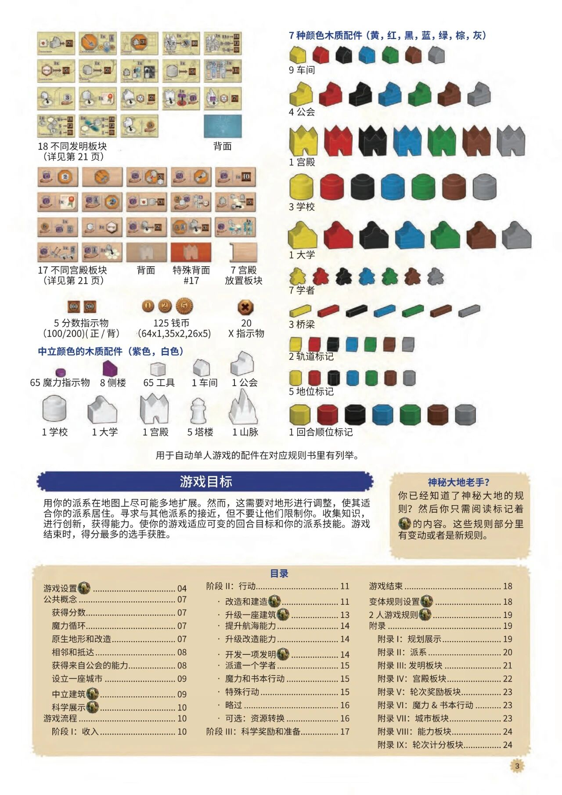
〔图 本页为游戏配件总览，左列为发明板块、宫殿板块、代币与中立配件，右列为七色木质配件，下方为游戏目标、神秘大地老手?边栏与目录〕
（配件图示，从上到下，左列）
〔图 多张发明板块小图，约 4 排排列，最后单独一张蓝色板〕
18 不同发明板块
（详见第 21 页）
背面
〔图 多张宫殿板块小图，4 排排列，末尾有背面、特殊背面与放置板块示意〕
17 不同宫殿板块
（详见第 21 页）
背面
特殊背面
#17
7 宫殿
放置板块
〔图 两枚棕色方形分数指示物（印有 100 与 200）、三枚金币（印有 1、2、5）、一枚棕色八角形 X 指示物〕
5 分数指示物
(100/200)(正 / 背)
125 钱币
(64x1,35x2,26x5)
20
X 指示物
中立颜色的木质配件（紫色，白色）
〔图 紫色圆片与紫色小屋，以及白色立方、小屋、圆顶、教堂形和山峰形木件〕
65 魔力指示物 8 侧楼 65 工具 1 车间 1 公会
1 学校 1 大学 1 宫殿 5 塔楼 1 山脉
7 种颜色木质配件（黄，红，黑，蓝，绿，棕，灰）
〔图 七种颜色（黄，红，黑，蓝，绿，棕，灰）的各种木质配件，逐排展示〕
9 车间
4 公会
1 宫殿
3 学校
1 大学
7 学者
3 桥梁
2 轨道标记
5 地位标记
1 回合顺位标记
用于自动单人游戏的配件在对应规则书里另有列举。
游戏目标
用你的派系在地图上尽可能多地扩展。然而，这需要对地形进行调整，使其适合你的派系居住。寻求与其他派系的接近，但不要让他们限制你。收集知识，进行创新，获得能力。使你的游戏适应可变的回合目标和你的派系技能。游戏结束时，得分最多的选手获胜。
神秘大地老手?
你已经知道了神秘大地的规则？然后你只需阅读标记着〔图 一个圆形小图标〕的内容。这些规则部分里有变动或者是新规则。
目录
游戏设置〔图 一个圆形小图标〕........................ 04
公共概念 ................................ 07
获得分数 ................................ 07
魔力循环 ................................ 07
原生地形和改造 .......................... 07
相邻和抵达 ................................ 08
获得来自公会的能力 ...................... 08
设立一座城市 ............................ 09
中立建筑〔图 一个圆形小图标〕........................ 09
科学展示〔图 一个圆形小图标〕........................ 10
游戏流程 ................................ 10
阶段 I：收入 ............................ 10
阶段 II：行动 ............................ 11
· 改造和建造〔图 一个圆形小图标〕.................... 11
· 升级一座建筑〔图 一个圆形小图标〕................ 13
· 提升航海能力 ............................ 14
· 升级改造能力 .......................... 14
· 开发一项发明〔图 一个圆形小图标〕.............. 14
· 派遣一个学者 ............................ 15
· 魔力和书本行动 ........................ 15
· 特殊行动 ................................ 15
· 略过 .................................... 16
· 可选：资源转换 .................... 16
阶段 III：科学奖励和准备................ 17
游戏结束 ................................ 18
变体规则设置〔图 一个圆形小图标〕........................ 18
2 人游戏规则〔图 一个圆形小图标〕........................ 19
附录 .................................... 19
附录 I：规划展示 ........................ 19
附录 II：派系 ............................ 20
附录 III：发明板块 ...................... 21
附录 IV：宫殿板块 ...................... 22
附录 V：轮次奖励板块.................... 23
附录 VI：魔力 & 书本行动 .......... 23
附录 VII：城市板块...................... 23
附录 VIII：能力板块...................... 24
附录 IX：轮次计分板块.................... 24
（页面右下角页码）3
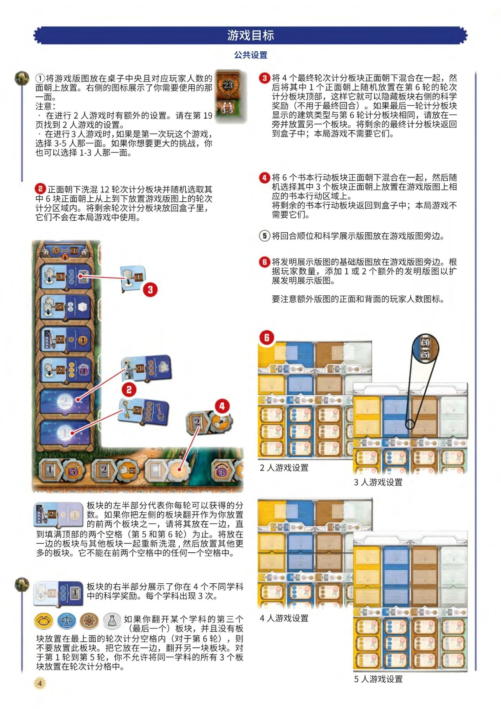
游戏目标
公共设置
〔图 左缘有一个圆形经验老手图标，指向步骤①〕
① 将游戏版图放在桌子中央且对应玩家人数的面朝上放置。右侧的图标展示了你需要使用的那一面。
〔图 右侧一张版图一角小图，显示数字"23"和下方"3-5"玩家人数图标〕
注意：
· 在进行 2 人游戏时有额外的设置。请在第 19 页找到 2 人游戏的设置。
· 在进行 3 人游戏时，如果是第一次玩这个游戏，选择 3-5 人那一面。如果你想要更大的挑战，你也可以选择 1-3 人那一面。
③ 将 4 个最终轮次计分板块正面朝下混合在一起，然后将其中 1 个正面朝上随机放置在第 6 轮的轮次计分板块顶部，这样它就可以隐藏板块右侧的科学奖励（不用于最终回合）。如果最后一轮计分板块显示的建筑类型与第 6 轮计分板块相同，请放在一旁并放置另一个板块。将剩余的最终计分板块返回到盒子中；本局游戏不需要它们。
② 正面朝下洗混 12 轮次计分板块并随机选取其中 6 块正面朝上从上到下放置游戏版图上的轮次计分区域内。将剩余轮次计分板块放回盒子里，它们不会在本局游戏中使用。〔原文如此：该句缺"在"字，"放置游戏版图上的"疑为"放置在游戏版图上的"〕
④ 将 6 个书本行动板块正面朝下混合在一起，然后随机选择其中 3 个板块正面朝上放置在游戏版图上相应的书本行动区域上。
将剩余的书本行动板块返回到盒子中；本局游戏不需要它们。
⑤ 将回合顺位和科学展示版图放在游戏版图旁边。
⑥ 将发明展示版图的基础版图放在游戏版图旁边。根据玩家数量，添加 1 或 2 个额外的发明版图以扩展发明展示版图。
要注意额外版图的正面和背面的玩家人数图标。
〔图 大幅版图设置示意图，展示游戏版图一角、轮次计分列（印有数字 1 至 6 的空格）、书本行动板块与最终计分板块，图中有红色编号箭头标注 2、3、4〕
〔图 一张轮次计分板块小图（左半深蓝右半浅蓝）〕 板块的左半部分代表你每轮可以获得的分数。如果你把左侧的板块翻开作为你放置的前两个板块之一，请将其放在一边，直到填满顶部的两个空格（第 5 和第 6 轮）为止。将放在一边的板块与其他板块一起重新洗混，然后放置其他更多的板块。它不能在前两个空格中的任何一个空格中。
〔图 左缘有一个圆形经验老手图标；旁边一张轮次计分板块小图〕 板块的右半部分展示了你在 4 个不同学科中的科学奖励。每个学科出现 3 次。
〔图 四个圆形学科图标（黄色、蓝色、棕色、灰色，分别为动物、天平、齿轮、烧瓶样式）〕 如果你翻开某个学科的第三个（最后一个）板块，并且没有板块放置在最上面的轮次计分空格内（对于第 6 轮），则不要放置此板块。把它放在一边，翻开另一块板块。对于第 1 轮到第 5 轮，你不允许将同一学科的所有 3 个板块放置在轮次计分格中。
〔图 发明展示版图摆法照片，两张发明版图拼在一起〕
2 人游戏设置
〔图 三张发明版图拼在一起的摆法照片〕
3 人游戏设置
〔图 四张发明版图拼在一起的摆法照片〕
4 人游戏设置
〔图 五张发明版图拼在一起的摆法照片，版图上印有各派系的书籍行动与奖励格子〕
5 人游戏设置
（页面左下角页码）4
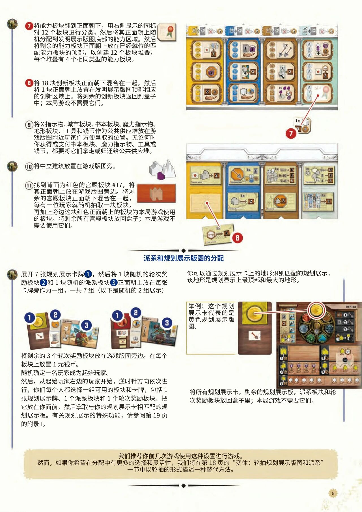
游戏设置（续：步骤 ⑦–⑪）
⑦ 将能力板块翻到正面朝下，用右侧显示的图标对 12 个板块进行分类，然后将其正面朝上随机分配到发明展示版图底部的能力区域。然后将剩余的能力板块正面朝上放在已经就位的匹配能力板块的顶部，以创建 12 个板块堆叠，每个堆叠有 4 个相同类型的能力板块。
〔图 发明展示版图上能力板块堆叠与创新板块摆放的示例照片，标注序号7、8〕
⑧ 将 18 块创新板块正面朝下混合在一起，然后将 1 块正面朝上放置在发明展示版图顶部相应的创新区域上。将剩余的创新板块返回到盒子中；本局游戏不需要它们。
⑨ 将 X 指示物、城市板块、书本板块、魔力指示物、地形板块、工具和钱币作为公共供应堆放在游戏版图附近玩家们方便拿取的位置。无论何时你获得或支付书本板块、魔力指示物、工具或钱币，都要将它们拿走或归还给公共供应堆。
⑩ 将中立建筑放置在游戏版图旁。
〔图 中立建筑与宫殿板块指示物的照片〕
⑪ 找到背面为红色的宫殿板块 #17，将其正面朝上放在游戏版图旁边。将剩余的宫殿板块正面朝下混合在一起，每有一位玩家就随机抽取一块板块，再加上旁边这块红色正面朝上的板块为本局游戏使用的板块。将剩余所有宫殿板块放回盒子；本局游戏不需要使用它们。
〔图 游戏版图旁放置宫殿板块的示例照片，标注序号8〕
派系和规划展示版图的分配
展开 7 张规划展示卡牌①，然后将 1 块随机的轮次奖励板块②和 1 块随机的派系板块③正面朝上放在每张卡牌旁作为一组，一共 7 组（以下是随机的 2 组展示）
〔图 两组规划展示卡牌与轮次奖励板块、派系板块的示例照片，标注序号1、2、3〕
你可以通过规划展示卡上的地形识别匹配的规划展示，该地形是规划显示上最顶部和最大的地形。〔原文如此："规划显示"照录〕
举例：这个规划展示卡代表的是黄色规划展示版图。
〔图 黄色规划展示卡与对应规划展示版图局部的对比照片〕
将剩余的 3 个轮次奖励板块放在游戏版图旁边。在每个板块上放置 1 元钱币。
随机确定一名玩家成为起始玩家。
然后，从起始玩家右边的玩家开始，逆时针方向依次进行，你们每个人都选择一组可用的板块和卡牌，包括 1 张规划展示牌、1 个派系板块和 1 个轮次奖励板块。把它放在你面前。然后拿取与你的规划展示卡相匹配的规划展示板。有关规划展示的特殊功能，请参阅第 19 页的附录 I。
将所有规划展示卡，剩余的规划展示板、派系板块和轮次奖励板块放回盒子里；本局游戏不需要它们。
变体指引（提示框）
我们推荐你前几次游戏使用这种设置进行游戏。然而，如果你希望在分配中有更多的选择和灵活性，我们将在第 18 页的"变体：轮抽规划展示版图和派系"一节中以轮抽的形式描述一种替代方法。
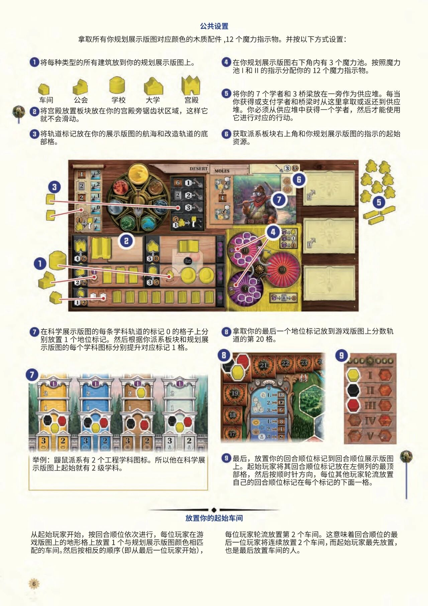
公共设置
拿取所有你规划展示版图对应颜色的木质配件 ,12 个魔力指示物。并按以下方式设置：
① 将每种类型的所有建筑放到你的规划展示版图上。
〔图 五种建筑木块的示意照片，自左至右标注名称〕
车间 公会 学校 大学 宫殿
② 将宫殿放置板块放在你的宫殿旁锯齿状区域，这样它就不会滑动。
③ 将轨道标记放在你的展示版图的航海和改造轨道的底部格。
④ 在你规划展示版图右下角内有 3 个魔力池。按照魔力池 I 和 II 的指示分配你的 12 个魔力指示物。
⑤ 将你的 7 个学者和 3 桥梁放在一旁作为供应堆。〔原文如此："3 桥梁"前无"个"字照录〕每当你获得或支付学者和桥梁时从这里拿取或返还到供应堆。你必须从供应堆中获得一个学者，然后才能使用它进行对应的行动。
〔图 学者与桥梁木块的照片，标注序号5〕
⑥ 获取派系板块右上角和你规划展示版图的指示的起始资源。
〔图 规划展示版图整体布置的示例照片，图上标注序号1–7指示各类配件与区域位置〕
⑦ 在科学展示版图的每条学科轨道的标记 0 的格子上分别放置 1 个地位标记。然后根据你派系板块和规划展示版图的每个学科图标分别提升对应标记 1 格。
〔图 科学展示版图上学科轨道与地位标记摆放的照片，标注序号7〕
举例：鼹鼠派系有 2 个工程学科图标。所以他在科学展示版图上起始就有 2 级学科。
⑧ 拿取你的最后一个地位标记放到游戏版图上分数轨道的第 20 格。
〔图 游戏版图分数轨道末端区域的照片，标注序号8〕
⑨ 最后，放置你的回合顺位标记到回合顺位展示版图上。起始玩家将其回合顺位标记放在左侧列的最顶部格，然后按顺时针方向，每位其他玩家轮流放置自己的回合顺位标记在每个标记的下面一格。
〔图 回合顺位展示版图的照片，标注序号9，右侧列标有罗马数字 I–V〕
放置你的起始车间
从起始玩家开始，按回合顺位依次进行，每位玩家在游戏版图上的地形格上放置 1 个与规划展示版图颜色相匹配的车间。然后按相反的顺序 (即从最后一位玩家开始），每位玩家轮流放置第 2 个车间。这意味着回合顺位的最后一位玩家将连续放置 2 个车间 , 而起始玩家最先放置，也是最后放置车间的人。
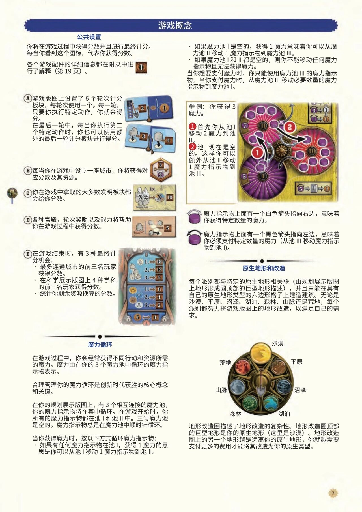
公共设置
你将在游戏过程中获得分数并且进行最终计分。每当你看到这个图标，代表你获得分数。
各个游戏配件的详细信息都在附录中进行了解释（第 19 页）。〔图 棕色方形"1"分图标〕
〔图 左上角小图，带立柱的球形小物件〕
A. 游戏版图上设置了 6 个轮次计分板块，每轮次使用一个。每一轮，只要你执行特定动作，你就会得分。
在最后一轮中，每当你执行第二个特定动作时，你也可以使用额外的最后一轮计分板块进行得分。
〔图 两块蓝色轮次计分板块，上块"2→1"，下块"3""4"〕
B. 每当你在游戏中设立一座城市，你将获得对应分数及其资源。
〔图 六边形城市标记，上有数字"8"〕
C. 你在游戏中拿取的大多数发明板块都会给你分数。
〔图 发明板块示例，印有"1x""X≠→X""10"〕
D. 各种宫殿，轮次奖励以及能力将帮助你在游戏过程中获得分数。
〔图 棕色板块示例，资源换算得分"5"〕
E. 在游戏结束时，有 3 种最终计分机会：
- 最多连通城市的前三名玩家获得分数。
- 在科学展示版图上 4 种学科的前三名玩家获得分数。
- 统计你剩余资源换算的分数。
〔图 计分展示版图，上行名次 1.→18、2.→12、3.→6；中行学科 1.→8、2.→4、3.→2；底部"5→1"〕
魔力循环
在游戏过程中，你会经常获得不同行动和资源所需的魔力。魔力由在你的 3 个魔力池中循环的魔力指示物表示。
合理管理你的魔力循环是创新时代获胜的核心概念和关键。
在你的规划展示版图上，有 3 个相互连接的魔力池，你的魔力指示物将在其中循环。在游戏开始时，你所有的魔力指示物都在池 I 和池 II 中。三号魔力池是空的。魔力指示物总是在魔力池中顺时针循环。
当你获得魔力时，按以下方式循环魔力指示物：
- 如果有任何魔力指示物在池 I，获得 1 魔力的意思是你可以从池 I 移动 1 魔力指示物到池 II。
- 如果魔力池 I 是空的，获得 1 魔力意味着你可以从魔力池 II 移动 1 魔力指示物到魔力池 III。
- 如果魔力池 I 和 II 都是空的，则你不能移动任何魔力指示物且无法获得魔力。
当你想要支付魔力时，你只能使用魔力池 III 的魔力指示物。当你支付魔力时，从魔力池 III 移动必要数量的魔力指示物到魔力池 I。
（举例框）举例：你获得 3 魔力。
① 首先你从池 I 移动 2 魔力到池 II。
② 池 I 现在是空的。这样你可以额外从池 II 移动 1 魔力指示物到池 III。
〔图 三个相连的紫色魔力池转轮，可见数字 7、5 及池 II、池 III 标记与移动箭头〕
〔图 紫色魔力指示物，上有白色弧形箭头指向右边〕魔力指示物上面有一个白色箭头指向右边，意味着你获得特定数量的魔力。
〔图 紫色魔力指示物，上有黑色弧形箭头指向左边〕魔力指示物上面有一个黑色箭头指向左边，意味着你必须支付特定数量的魔力（从池 III 移动魔力指示物到池 I）。
原生地形和改造
每个派别都与特定的原生地形相关联（由规划展示版图上地形形成圈顶部的巨型地形描述），并且只能在具有自己的原生地形类型的六边形格子上建造建筑。无论是沙漠、平原、沼泽、湖泊、森林、山脉还是荒地，每个派别都努力将游戏版图上的地形改造，以满足自己的需求。
〔图 地形改造圈，圆轮上嵌 7 个地形圆窗，中心为铁锹图案；周围标注：沙漠（顶部）、平原（右上）、沼泽（右）、湖泊（右下）、森林（左下）、山脉（左）、荒地（左上）〕
地形改造圈描述了地形改造的复杂性。地形改造圈顶部的巨型地形是你的原生地形（这里是沙漠）。地形改造圈上的另一个地形越是远离你的原生地形，你就越需要支付更多的费用才能将其改造为你的原生类型。
（页脚页码）7
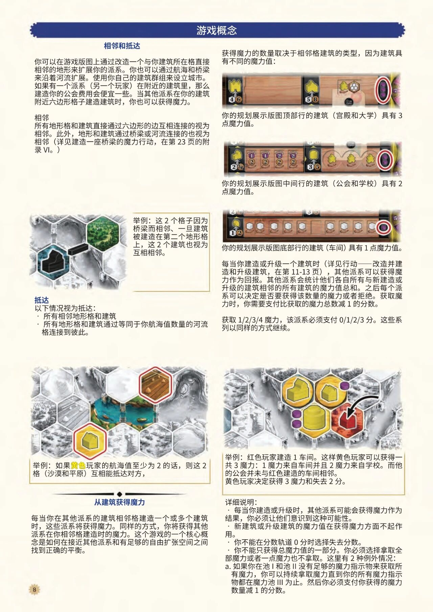
相邻和抵达
你可以在游戏版图上通过改造一个与你建筑所在格直接相邻的地形来扩展你的派系。你也可以通过航海和桥梁来沿着河流扩展。使用你自己的建筑群组来设立城市。如果有一个派系（另一个玩家）在附近的建筑里，那么建造你的公会费用会便宜一些。当其他派系在你的建筑附近六边形格子建造建筑时，你也可以获得魔力。
相邻
所有地形格和建筑直接通过六边形的边互相连接的视为相邻。此外，地形和建筑通过桥梁或河流连接的也视为相邻（详见建造一座桥梁的魔力行动，在第 23 页的附录 VI。）
〔图 版图局部，绿色森林地形格与另一深色地形格之间由一座黑色桥梁相连〕
（举例框）举例：这 2 个格子因为桥梁而相邻、一旦建筑被建造在第二个地形格上，这 2 个建筑也视为互相相邻。〔原文如此〕
抵达
以下情况视为抵达：
- 所有相邻地形格和建筑
- 所有地形格和建筑通过等同于你航海值数量的河流格连接到彼此。
〔图 版图局部，左下沙漠格（上有黄色建筑）与右上平原格被红框标出，中间隔着河流和两座桥梁〕
（举例框）举例：如果黄色玩家的航海值至少为 2 的话，则这 2 格（沙漠和平原）互相能抵达对方，〔原文如此〕
从建筑获得魔力
每当你在其他派系的建筑相邻格建造一个或多个建筑时，这些派系将获得魔力。同样的方式，你将获得其他派系在你相邻格建造时的魔力。这个游戏的一个核心概念是如何在接近其他派系和有足够的自由扩张空间之间找到正确的平衡。
（右栏接排）获得魔力的数量取决于相邻格建筑的类型，因为建筑具有不同的魔力值：
〔图 规划展示版图顶部行木条，上有建筑槽位与"4""6""5""8"等数字，右侧魔力指示物被红圈标出〕
你的规划展示版图顶部行的建筑（宫殿和大学）具有 3 点魔力值。
〔图 规划展示版图中间行木条，上有建筑槽位、魔力值标记"1/2""2/2"等与"3""5"数字，右侧魔力指示物被红圈标出〕
你的规划展示版图中间行的建筑（公会和学校）具有 2 点魔力值。
〔图 规划展示版图底部行木条，上有一排建筑槽位与"1""2"数字，右侧魔力指示物被红圈标出〕
你的规划展示版图底部行的建筑（车间）具有 1 点魔力值。
每当你建造或升级一个建筑时（详见行动——改造并建造和升级建筑，在第 11-13 页），其他派系可以获得魔力作为回报。其他派系会统计他们各自所有与新建造或升级的建筑相邻的所有建筑的魔力值总和。之后每个派系可以决定是否要获得该数量的魔力或者拒绝。获取魔力时，你需要支付比获取的魔力总数减 1 的分数。
获取 1/2/3/4 魔力，该派系必须支付 0/1/2/3 分。这些系列以同样的方式继续。
〔图 版图局部，几个黄色建筑（学校、公会等）与一个红色新建车间（被箭头指向），旁边有紫色魔力指示物〕
（举例框）举例：红色玩家建造 1 车间。这样黄色玩家可以获得一共 3 魔力：1 魔力来自车间并且 2 魔力来自学校。而他的公会并未与红色建造的车间相邻。
黄色玩家决定获得 3 魔力和失去 2 分。
详细说明：
- 每当你建造或升级时，其他派系可能会获得魔力作为结果，你必须让他们意识到这种可能性。
- 新建筑或升级建筑的魔力值在获得魔力方面不起作用。
- 你不能在分数轨道 0 分时选择失去分数。
- 你不能只获得总魔力值的一部分。你必须选择拿取全部魔力或者一点魔力也不拿取。这里有 2 种例外情况：
a. 如果你在池 I 和池 II 没有足够的魔力指示物来获取所有魔力，你可以持续拿取魔力直到你的所有魔力指示物都在魔力池 III 为止。然后你必须支付你获得的魔力数量减 1 的分数。
（页脚页码）8
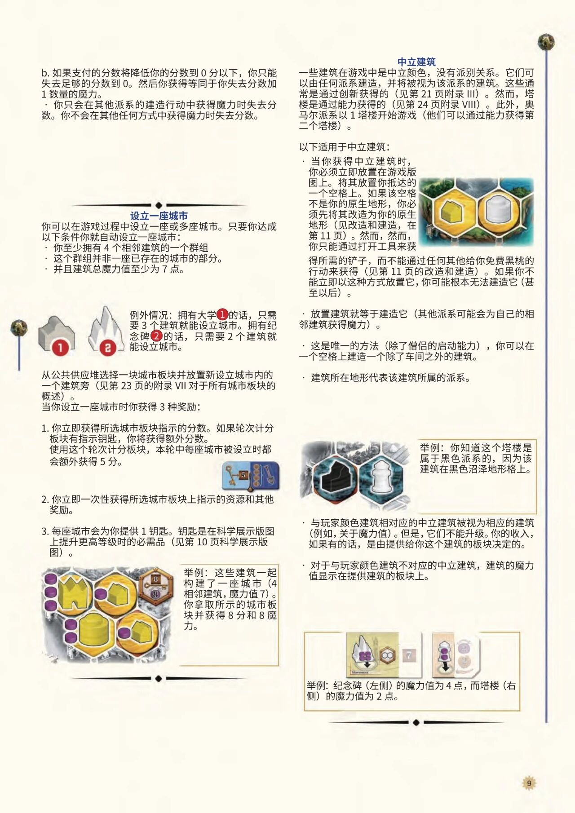
从建筑获得魔力（续）
b. 如果支付的分数将降低你的分数到 0 分以下，你只能失去足够的分数到 0。然后你获得等同于你失去分数加 1 数量的魔力。
· 你只会在其他派系的建造行动中获得魔力时失去分数。你不会在其他任何方式中获得魔力时失去分数。
设立一座城市
你可以在游戏过程中设立一座或多座城市。只要你达成以下条件你就自动设立一座城市：
· 你至少拥有 4 个相邻建筑的一个群组
· 这个群组并非一座已存在的城市的部分。
· 并且建筑总魔力值至少为 7 点。
〔图 两座建筑示意图，左侧灰色坡顶建筑标红色①，右侧白色尖塔状建筑标红色②〕
例外情况：拥有大学①的话，只需要 3 个建筑就能设立城市。拥有纪念碑②的话，只需要 2 个建筑就能设立城市。
从公共供应堆选择一块城市板块并放置新设立城市内的一个建筑旁（见第 23 页的附录 VII 对于所有城市板块的概述）。
当你设立一座城市时你获得 3 种奖励：
1. 你立即获得所选城市板块指示的分数。如果轮次计分板块有指示钥匙，你将获得额外分数。
使用这个轮次计分板块，本轮中每座城市被设立时都会额外获得 5 分。
〔图 蓝色轮次计分板块示意图，左半为钥匙图案连接数字5，右半为一排硬币图案和一把铲子图案〕
2. 你立即一次性获得所选城市板块上指示的资源和其他奖励。
3. 每座城市会为你提供 1 钥匙。钥匙是在科学展示版图上提升更高级别时的必需品（见第 10 页科学展示版图）。
〔图 游戏版图局部，四个相邻的黄色地形六边形格中立着 4 个带紫色标记的黄色建筑，右上方一枚钥匙形徽章，上下都印有数字 8〕
举例：这些建筑一起构建了一座城市（4 相邻建筑，魔力值7）。你拿取所示的城市板块并获得 8 分和 8 魔力。
中立建筑
一些建筑在游戏中是中立颜色，没有派别关系。它们可以由任何派系建造，并将被视为该派系的建筑。这些通常是通过创新获得的（见第 21 页附录 III）。然而，塔楼是通过能力获得的（见第 24 页附录 VIII）。此外，奥马尔派系以 1 塔楼开始游戏（他们可以通过能力获得第二个塔楼）。
以下适用于中立建筑：
· 当你获得中立建筑时，你必须立即放置在游戏版图上。将其放置你抵达的〔原文如此，疑漏"在"〕一个空格上。如果该空格不是你的原生地形，你必须先将其改造为你的原生地形（见改造和建造，在第 11 页）。然而，然而，〔原文如此，重复〕你只能通过打开工具来获得所需的铲子，而不能通过任何其他给你免费黑桃〔原文如此〕的行动来获得（见第 11 页的改造和建造）。如果你不能立即以这种方式放置它，你可能根本无法建造它（甚至以后）。
〔图 游戏版图局部，左侧绿色森林地形格上的黄色建筑，右侧浅色沙地格上的白色中立建筑〕
· 放置建筑就等于建造它（其他派系可能会为自己的相邻建筑获得魔力）。
· 这是唯一的方法（除了僧侣的启动能力），你可以在一个空格上建造一个除了车间之外的建筑。
· 建筑所在地形代表该建筑所属的派系。
〔图 游戏版图局部，黑色沼泽地形六边形格上并排一座黑色建筑和一个白色塔楼〕
举例：你知道这个塔楼是属于黑色派系的，因为该建筑在黑色沼泽地形格上。
· 与玩家颜色建筑相对应的中立建筑被视为相应的建筑（例如，关于魔力值）。但是，它们不能升级。你的收入，如果有的话，是由提供给你这个建筑的板块决定的。
· 对于与玩家颜色建筑不对应的中立建筑，建筑的魔力值显示在提供建筑的板块上。
〔图 两张卡牌局部，左侧卡面为白色纪念碑图案、带紫色标记和数字 7，右侧卡面为塔楼图案、带紫色标记〕
举例： 纪念碑（左侧）的魔力值为 4 点，而塔楼（右侧）的魔力值为 2 点。
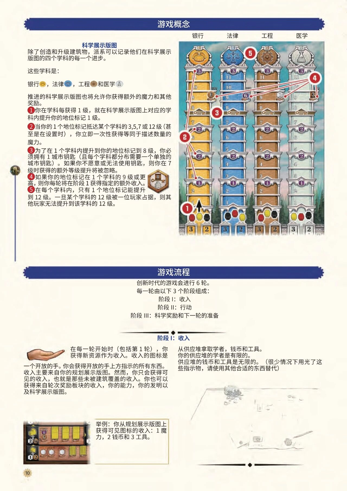
游戏概念
科学展示版图
除了创造和升级建筑物，派系可以记录他们在科学展示版图的四个学科的每一个进步。
这些学科是：
银行〔图 金色圆形图标〕，法律〔图 蓝色圆形天平图标〕，工程〔图 棕色圆形齿轮图标〕和医学〔图 灰色圆形烧瓶图标〕
推进的科学展示版图也将允许你获得额外的魔力和其他奖励。
①你在学科每获得 1 级，就在科学展示版图上对应的学科内提升你的地位标记 1 级。
②当你的 1 个地位标记抵达某个学科的 3,5,7 或 12 级（甚至是在设置时），你立即一次性获得等同于描述数量的魔力。
③为了在 1 个学科内提升到你的地位标记到 8 级，你必须拥有 1 城市钥匙（且每个学科都分布需要一个单独的城市钥匙）〔原文如此〕。如果你不愿意或无法使用钥匙，则你在 7 级时获得的额外等级提升将被忽略。
④如果你的地位标记在 1 个学科的 9 级或更高，则你每轮将在阶段 1 获得指定的额外收入。
⑤在每个学科内，只有 1 个地位标记能提升到 12 级。一旦某个学科的 12 级被一位玩家占据，则其他玩家无法提升到该学科的 12 级。
〔图 科学展示版图大图，四座塔状等级轨道从左到右分别标注"银行""法律""工程""医学"，每座塔有 12 级格子并印有钥匙、数字等图案；图上叠有红圈数字①-⑤标注规则位置；底部一排彩色圆片指示物，每座塔下方印有数字 3 和 2，一座塔脚处有一支向上箭头〕
游戏流程
创新时代的游戏会进行 6 轮。
每一轮由以下 3 个阶段组成：
阶段 I: 收入
阶段 II: 行动
阶段 III: 科学奖励和下一轮的准备
阶段 I: 收入
〔图 一只摊开的手掌照片，位于左栏段落左上方〕
在每一轮开始时（包括第 1 轮），你获得新资源作为收入。收入的图标是一个开放的手。你会获得开放的手上方指示的所有东西。收入主要来自你的规划展示版图。然而，你只会获得可见的收入，也就是那些未被建筑覆盖的收入。你也可以获得来自轮次奖励板块的收入，你的能力，你的发明以及科学展示版图。
（右栏）
从供应堆拿取学者，钱币和工具。
你的供应堆的学者是有限的。
供应堆的钱币和工具是无限的。（很少情况下用光了这些指示物，请使用其他合适的东西替代）
〔图 右栏下方一幅供应堆场景的手绘素描插图〕
〔图 左下角规划展示版图局部照片，两层木色面板格子上放有黄色长方块（钱币）、白色六边形指示物、紫色与棕色圆形标记，格边印有数字 1、2、3〕
举例：你从规划展示版图上获得可见图标的收入： 1 魔力，2 钱币和 3 工具。
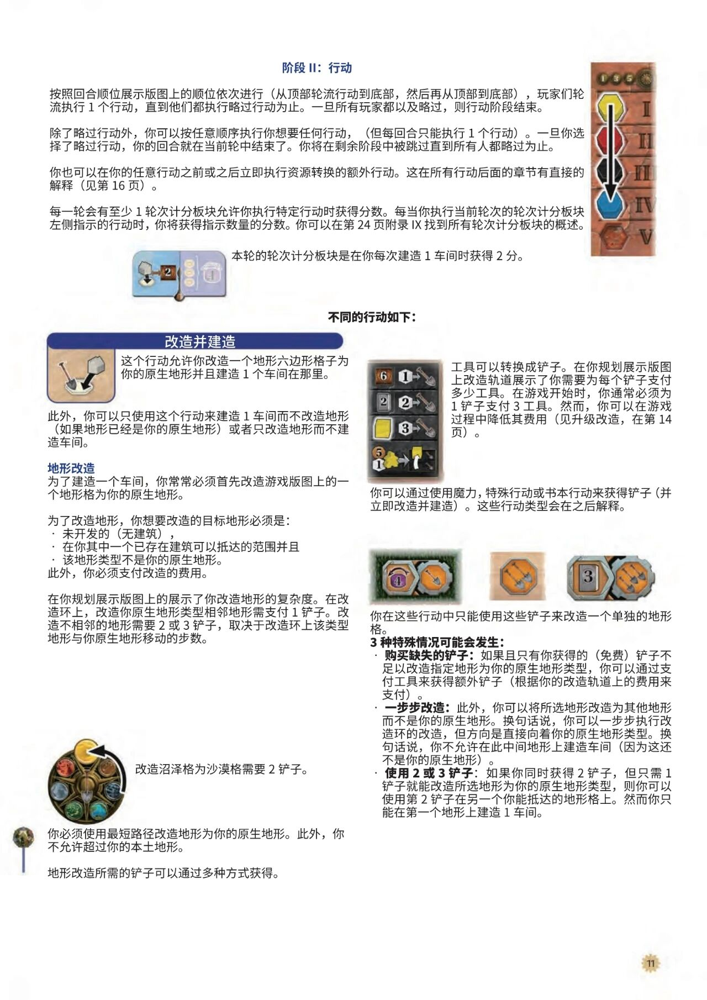
阶段 II：行动
按照回合顺位展示版图上的顺位依次进行（从顶部轮流行动到底部，然后再从顶部到底部），玩家们轮流执行 1 个行动，直到他们都执行略过行动为止。一旦所有玩家都以及略过，则行动阶段结束。〔原文如此："都以及略过"〕
除了略过行动外，你可以按任意顺序执行你想要任何行动，（但每回合只能执行 1 个行动）。一旦你选择了略过行动，你的回合就在当前轮中结束了。你将在剩余阶段中被跳过直到所有人都略过为止。〔原文如此："执行你想要任何行动"〕
你也可以在你的任意行动之前或之后立即执行资源转换的额外行动。这在所有行动后面的章节有直接的解释（见第 16 页）。
每一轮会有至少 1 轮次计分板块允许你执行特定行动时获得分数。每当你执行当前轮次的轮次计分板块左侧指示的行动时，你将获得指示数量的分数。你可以在第 24 页附录 IX 找到所有轮次计分板块的概述。
〔图 轮次计分板块示例，铲子/仓库图标与数字"2"〕本轮的轮次计分板块是在你每次建造 1 车间时获得 2 分。
不同的行动如下：
改造并建造
〔图 行动图标——铲子指向六边形地形格〕
这个行动允许你改造一个地形六边形格子为你的原生地形并且建造 1 个车间在那里。
此外，你可以只使用这个行动来建造 1 车间而不改造地形（如果地形已经是你的原生地形）或者只改造地形而不建造车间。
地形改造
为了建造一个车间，你常常必须首先改造游戏版图上的一个地形格为你的原生地形。
为了改造地形，你想要改造的目标地形必须是：
· 未开发的（无建筑），
· 在你其中一个已存在建筑可以抵达的范围并且
· 该地形类型不是你的原生地形。
此外，你必须支付改造的费用。
在你规划展示版图上的展示了你改造地形的复杂度。在改造环上，改造你原生地形类型相邻地形需支付 1 铲子。改造不相邻的地形需要 2 或 3 铲子，取决于改造环上该类型地形与你原生地形移动的步数。〔原文如此："在你规划展示版图上的展示了"〕
〔图 改造环，黄色地形圆片在顶部，黑色箭头指向环中央的铲子〕改造沼泽格为沙漠格需要 2 铲子。
〔图 小地形圆片图标〕你必须使用最短路径改造地形为你的原生地形。此外，你不允许超过你的本土地形。
地形改造所需的铲子可以通过多种方式获得。
（右栏，接"不同的行动如下"）
〔图 规划展示版图上的改造轨道，六边形图标 6→1 铲子、2→2 铲子、黄色→3 铲子，下方 5 和 1→黄色〕
工具可以转换成铲子。在你规划展示版图上改造轨道展示了你需要为每个铲子支付多少工具。在游戏开始时，你通常必须为 1 铲子支付 3 工具。然而，你可以在游戏过程中降低其费用（见升级改造，在第 14 页）。
你可以通过使用魔力，特殊行动或书本行动来获得铲子（并立即改造并建造）。这些行动类型会在之后解释。
〔图 三个行动板块缩略图，含紫色魔力值、铲子与数字"3"等图案〕
你在这些行动中只能使用这些铲子来改造一个单独的地形格。
3 种特殊情况可能会发生：
· 购买缺失的铲子： 如果且只有你获得的（免费）铲子不足以改造指定地形为你的原生地形类型，你可以通过支付工具来获得额外铲子（根据你的改造轨道上的费用来支付）。
· 一步步改造： 此外，你可以将所选地形改造为其他地形而不是你的原生地形。换句话说，你可以一步步执行改造环的改造，但方向是直接向着你的原生地形类型。换句话说，你不允许在此中间地形上建造车间（因为这还不是你的原生地形）。
· 使用 2 或 3 铲子： 如果你同时获得 2 铲子，但只需 1 铲子就能改造所选地形为你的原生地形类型，则你可以使用第 2 铲子在另一个你能抵达的地形格上。然而你只能在第一个地形上建造 1 车间。
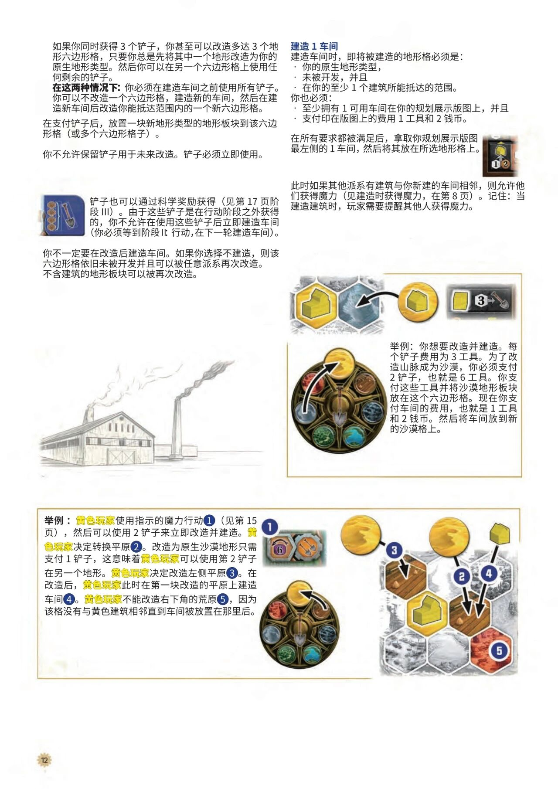
改造并建造（续）
如果你同时获得 3 个铲子，你甚至可以改造多达 3 个地形六边形格，只要你总是先将其中一个地形改造为你的原生地形类型。然后你可以在另一个六边形格上使用任何剩余的铲子。
在这两种情况下： 你必须在建造车间之前使用所有铲子。你可以不改造一个六边形格，建造新的车间，然后在建造新车间后改造你能抵达范围内的一个新六边形格。
在支付铲子后，放置一块新地形类型的地形板块到该六边形格（或多个六边形格子）。
你不允许保留铲子用于未来改造。铲子必须立即使用。
〔图 蓝色板块，三枚钱币与大括号、铲子图案〕铲子也可以通过科学奖励获得（见第 17 页阶段 III）。由于这些铲子是在行动阶段之外获得的，你不允许在使用这些铲子后立即建造车间（你必须等到阶段 II: 行动，在下一轮建造车间）。
你不一定要在改造后建造车间。如果你选择不建造，则该六边形格依旧未被开发并且可以被任意派系再次改造。不含建筑的地形板块可以被再次改造。
〔图 车间素描图，带两根烟囱的厂房〕
建造 1 车间
建造车间时，即将被建造的地形格必须是：
· 你的原生地形类型，
· 未被开发，并且
· 在你的至少 1 个建筑所能抵达的范围。
你也必须：
· 至少拥有 1 可用车间在你的规划展示版图上，并且
· 支付印在版图上的费用 1 工具和 2 钱币。
在所有要求都被满足后，拿取你规划展示版图最左侧的 1 车间，然后将其放在所选地形格上。
〔图 规划展示版图局部，黄色车间图标与费用"1""2"〕
此时如果其他派系有建筑与你新建的车间相邻，则允许他们获得魔力（见建造时获得魔力，在第 8 页）。记住：当建造建筑时，玩家需要提醒其他人获得魔力。
〔图 举例图——黄色地形板块、六边形沙漠格与"3铲子"费用图标；改造环上黄色圆片与箭头〕
举例：你想要改造并建造。每个铲子费用为 3 工具。为了改造山脉成为沙漠，你必须支付 2 铲子，也就是 6 工具。你支付这些工具并将沙漠地形板块放在这个六边形格。现在你支付车间的费用，也就是 1 工具和 2 钱币。然后将车间放到新的沙漠格上。
举例（下方框注）
举例：黄色玩家使用指示的魔力行动①（见第 15 页），然后可以使用 2 铲子来立即改造并建造。黄色玩家决定转换平原②。改造为原生沙漠地形只需支付 1 铲子，这意味着黄色玩家可以使用第 2 铲子在另一个地形。黄色玩家决定改造左侧平原③。在改造后，黄色玩家此时在第一块改造的平原上建造车间④。黄色玩家不能改造右下角的荒原⑤，因为该格没有与黄色建筑相邻直到车间被放置在那里后。〔原文如此："该格没有与黄色建筑相邻直到车间被放置在那里后"〕
〔图 举例配图——魔力行动板块①、改造环，以及六边形版图，标注数字③④②④⑤（棕色平原格、黄色车间、红棕色荒原格⑤）〕
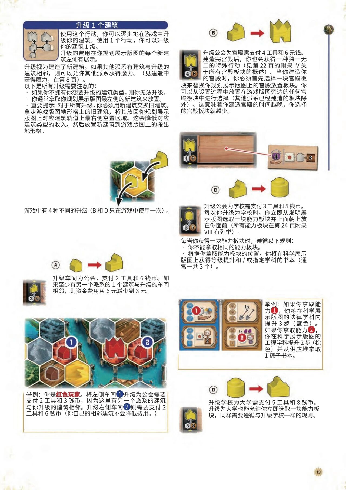
升级 1 个建筑
〔图 行动栏图标，由黑色箭头连接的灰色建筑剪影（建筑升级链）〕
使用这个行动，你可以逐步地在游戏中升级你的建筑。使用 1 个行动，你可以升级你的建筑 1 级。
升级的费用在你规划展示版图的每个新建筑左侧有展示。
升级视为建造了新建筑。如果其他派系有建筑与升级的建筑相邻，则可以允许其他派系获得魔力。（见建造中获得魔力，在第 8 页）。
以下是所有升级需要注意的：
· 如果你不拥有你想要升级的建筑类型，则你无法升级。
· 你通常拿取你规划展示版图最左侧的新建筑来放置。
· 重要提示： 对于所有升级，你必须用新建筑交换旧建筑。拿走游戏版图地形格上的旧建筑，将其放回你规划展示版图上对应建筑轨道上最右侧空置区域。这会降低对应建筑类型的收入。然后放置新建筑到游戏版图上的搬出地形格。〔原文如此〕
〔图 游戏版图局部，黄色地形格上有黑色箭头指向一座黄色公会模型〕
游戏中有 4 种不同的升级（B 和 D 只在游戏中使用一次）。
A
〔图 A 圆标，小屋模型→公会模型；旁边费用图标为 2 工具和 3/6 元钱币〕
升级车间为公会，支付 2 工具和 6 钱币。如果至少有另一个派系的 1 个建筑与升级的车间相邻，则资金费用从 6 元减少到 3 元。
〔图 规划展示版图建筑轨道费用格，箭头指向公会图标，下方为"2"与"3/6"钱币图标〕
〔图 游戏版图局部照片，红色派系建筑与相邻地形，两格分别标①②〕
举例：你是红色玩家。将左侧车间①升级为公会需要支付 2 工具和 3 钱币，因为这里有另一个派系的建筑与你升级的建筑相邻。升级右侧车间②则需要支付 2 工具和 6 钱币（你自己的相邻建筑不会降低费用。）
B
〔图 B 圆标，公会模型→宫殿模型〕
〔图 费用格，宫殿图标下有"4"工具与"6"元图标〕
升级公会为宫殿需支付 4 工具和 6 元钱。建造完宫殿后，你也会获得一种独一无二的特殊行动（见第 22 页的附录 IV 关于所有宫殿板块的概述）。当你建造你的宫殿时，你必须首先选择一块宫殿板块来替换你规划展示版图上的宫殿放置板块。你可以从设置过程中放置在游戏版图旁边的任何宫殿板块中进行选择（其他派系已经建造的板块除外）。这意味着你建造宫殿的时间越晚，你选择的宫殿板块就越少。
〔图 费用格（4/6）与宫殿放置板块照片，红色箭头指向旁边小面板（手、两枚钱币与"3"标块）〕
C
〔图 C 圆标，公会模型→学校（圆顶塔）模型〕
〔图 费用格，学校图标下有"3"工具与"5"元图标〕
升级公会为学校需支付 3 工具和 5 钱币。每次你升级为学校时，你立即从发明展示版图选取一块能力板块并正面朝上放在你面前（所有能力板块在第 24 页附录 VIII 有列举）。
每当你获得一块能力板块时，遵循以下规则：
· 你不能拿取相同的能力板块。
· 根据你拿取能力板块的位置，你将在科学展示版图上获得等级提升和 / 或指定学科的书本（通常一共 3 个）。
〔图 金框举例框，内为蓝色、棕色能力板块照片，分别标①②〕
举例：如果你拿取能力①，你将在科学展示版图的法学学科内提升 3 步（蓝色）。如果你拿取能力②，你在科学展示版图的工程学科提升 2 步（棕色）并从供应堆拿取 1 粽子书本。〔原文如此〕
D
〔图 D 圆标，学校（圆顶塔）模型→大学（宽顶）模型〕
〔图 费用格，大学图标下有"5"工具与"8"元图标〕
升级学校为大学需支付 5 工具和 8 钱币。升级为大学也能允许你立即选取一块能力板块，同样需要遵循与升级学校一样的规则。
〔页脚页码：13〕
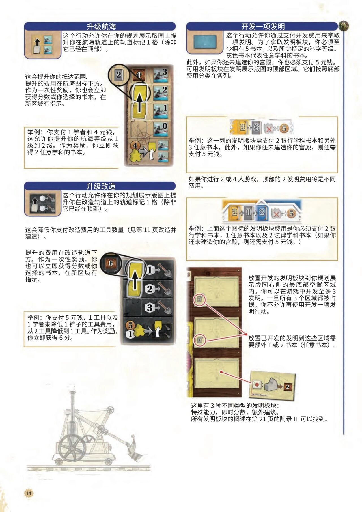
升级航海
〔图 行动栏图标，白色轨道标记上方有上行黑箭头，旁边为两张航海图片〕
这个行动允许你在你的规划展示版图上提升你在航海轨道上的轨道标记 1 格（除非它已经在顶部）。
这会提升你的抵达范围。
提升的费用在航海图标下方。
作为一次性奖励，你也会立即获得分数或你选择的书本，在新区域有指示。
〔图 航海轨道局部，黄色轨道标记上移一格，放大圈显示"2"费用图标；轨道右侧为标 4、3、2、1 的航海图片〕
举例：你支付 1 学者和 4 元钱，这允许你提升你的航海等级从 1 级到 2 级。作为奖励，你立即获得 2 任意学科的书本。
升级改造
〔图 行动栏图标，白色轨道标记上方有上行黑箭头，旁边为铲子图标〕
这个行动允许你在你的规划展示版图上提升你在改造轨道上的轨道标记 1 格（除非它已经在顶部）。
这会降低你支付改造费用的工具数量（见第 11 页改造并建造）。
提升的费用在改造轨道下方。作为一次性奖励，你也可以立即获得分数或你选择的书本，在新区域有指示。
〔图 改造轨道局部，黄色轨道标记上移，放大圈显示"6"分数块与"1→铲子"图标〕
举例：你支付 5 元钱，1 工具以及 1 学者来降低 1 铲子的工具费用，从 2 工具降低到 1 工具。作为奖励，你立即获得 6 分。
〔图 左下角蒸汽挖掘机线描插画〕
开发一项发明
〔图 行动栏图标，一块蓝色发明板块〕
这个行动允许你通过支付开发费用来拿取一项发明。为了拿取发明板块，你必须至少拥有 5 书本，以及所需特定的科学等级。灰色书本代表任意学科的书本。
此外，如果你还未建造你的宫殿，你也必须支付 5 元钱。
可用发明板块在发明展示版图的顶部区域。它们按照底部费用分类在各列。
〔图 发明列费用图标：书本"2+3"，宫殿打叉"+5"（钱币 5）〕
举例：这一列的发明板块需支付 2 银行学科书本和另外 3 任意书本，此外，如果你还未建造你的宫殿，则还需支付 5 元钱。
如果你进行 2 或 4 人游戏，顶部的 2 发明费用将是不同费用。
〔图 发明费用图标：书本"2+1+2"（黄、灰、蓝），宫殿打叉"+5"（钱币 5）〕
举例：上面这个图标的发明板块费用是你必须支付 2 银行学科书本，1 任意书本以及 2 法律学科书本（如果你还未建造你的宫殿，则还需支付 5 元钱。）
〔图 规划展示版图右侧的三个发明放置区域照片，①②标示两处；下方一块发明板块照片（信封打叉：建筑→2，卡面英文小字"Trading Route"）〕
放置开发的发明板块到你规划展示版图右侧的最底部空置区域内。你可以在游戏中开发至多 3 发明。一旦所有 3 个区域都被占据，你不允许再使用开发一项发明行动。
放置已开发的发明到这些区域需要额外 1 或 2 书本（任意书本）。
这里有 3 种不同类型的发明板块：
特殊能力，即时分数，额外建筑。
所有发明板块的概述在第 21 页的附录 III 可以找到。
〔页脚页码：14〕
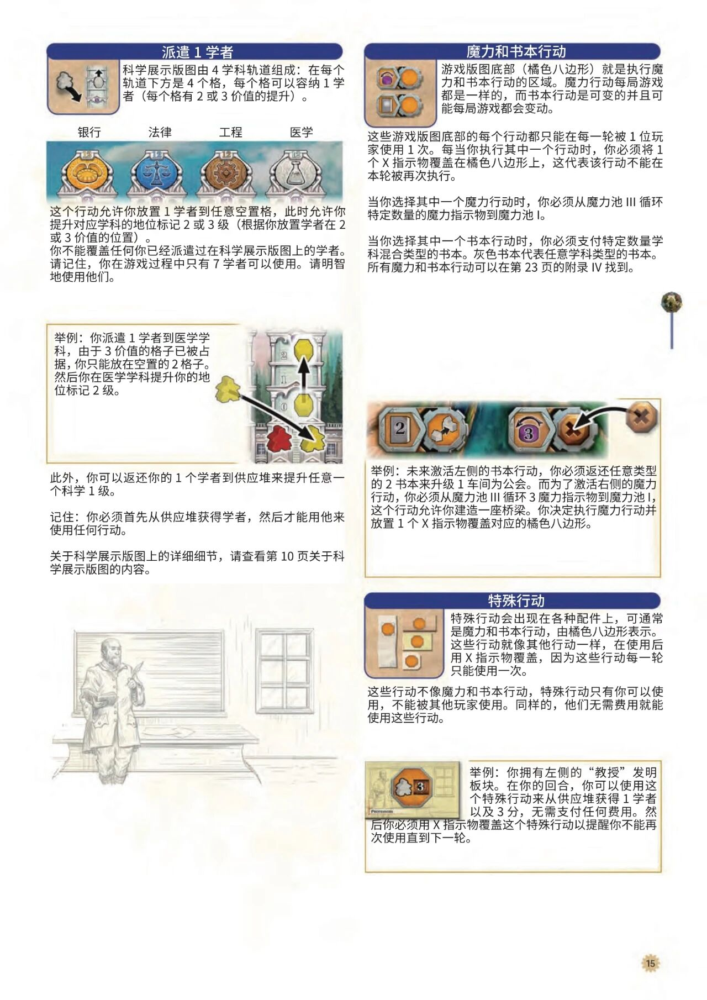
派遣 1 学者
〔图 左侧图标为学者供应堆与道轨示意，旁边为蓝色标题条"派遣 1 学者"〕
科学展示版图由 4 学科轨道组成：在每个轨道下方是 4 个格，每个格可以容纳 1 学者（每个格有 2 或 3 价值的提升）。
〔图 四个学科轨道图标，上方从左到右标签为"银行、法律、工程、医学"，各为不同颜色的学院徽饰图案〕
这个行动允许你放置 1 学者到任意空置格，此时允许你提升对应学科的地位标记 2 或 3 级（根据你放置学者在 2 或 3 价值的位置）。
你不能覆盖任何你已经派遣过在科学展示版图上的学者。请记住，你在游戏过程中只有 7 学者可以使用。请明智地使用他们。
举例：你派遣 1 学者到医学学科，由于 3 价值的格子已被占据，你只能放在空置的 2 格子。然后你在医学学科提升你的地位标记 2 级。
〔图 科学展示版图局部，黄色学者从供应堆经箭头放入标"0"的格子，另一箭头沿轨道从 0 上移到 1、2，红色学者占据下方格子〕
此外，你可以返还你的 1 个学者到供应堆来提升任意一个科学 1 级。
记住：你必须首先从供应堆获得学者，然后才能用他来使用任何行动。
关于科学展示版图上的详细细节，请查看第 10 页关于科学展示版图的内容。
〔图 铅笔素描插图，一位穿大衣的男子站在桌旁，背景有窗户〕
魔力和书本行动
〔图 左侧图标为两对六边形行动格：一格为紫色魔力图形配橙色八边形，一格为灰色书本图形配橙色八边形〕
游戏版图底部（橙色八边形）就是执行魔力和书本行动的区域。魔力行动每局游戏都是一样的，而书本行动是可变的并且可能每局游戏都会变动。
这些游戏版图底部的每个行动都只能在每一轮被 1 位玩家使用 1 次。每当你执行其中一个行动时，你必须将 1 个 X 指示物覆盖在橙色八边形上，这代表该行动不能在本轮被再次执行。
当你选择其中一个魔力行动时，你必须从魔力池 III 循环特定数量的魔力指示物到魔力池 I。
当你选择其中一个书本行动时，你必须支付特定数量学科混合类型的书本。灰色书本代表任意学科类型的书本。所有魔力和书本行动可以在第 23 页的附录 IV 找到。〔原文如此：原书即印"附录 IV"，按目录与 P.23 实际内容应为"附录 VI"〕
〔图 版图底部行动条局部，左侧书本行动格标有"2"和书本图标，右侧魔力行动格标有"3"和魔力图标，一黑色箭头指向右侧的橙色八边形，旁有一枚 X 指示物〕
举例：未来激活〔原文如此〕左侧的书本行动，你必须返还任意类型的 2 书本来升级 1 车间为公会。而为了激活右侧的魔力行动，你必须从魔力池 III 循环 3 魔力指示物到魔力池 I，这个行动允许你建造一座桥梁。你就决定执行魔力行动并放置 1 个 X 指示物覆盖对应的橙色八边形。
特殊行动
〔图 左侧图标为三张配件局部，各带一个橙色八边形〕
特殊行动会出现在各种配件上，可通常是魔力和书本行动，由橙色八边形表示。这些行动就像其他行动一样，在使用后用 X 指示物覆盖，因为这些行动每一轮只能使用一次。
这些行动不像魔力和书本行动，特殊行动只有你可以使用，不能被其他玩家使用。同样的，他们无需费用就能使用这些行动。
〔图 "教授"发明板块局部，带橙色八边形，内有学者图形和数字"3"〕
举例：你拥有左侧的"教授"发明板块。在你的回合，你可以使用这个特殊行动来从供应堆获得 1 学者以及 3 分，无需支付任何费用。然后你必须用 X 指示物覆盖这个特殊行动以提醒你不能再次使用直到下一轮。
〔页码：15〕
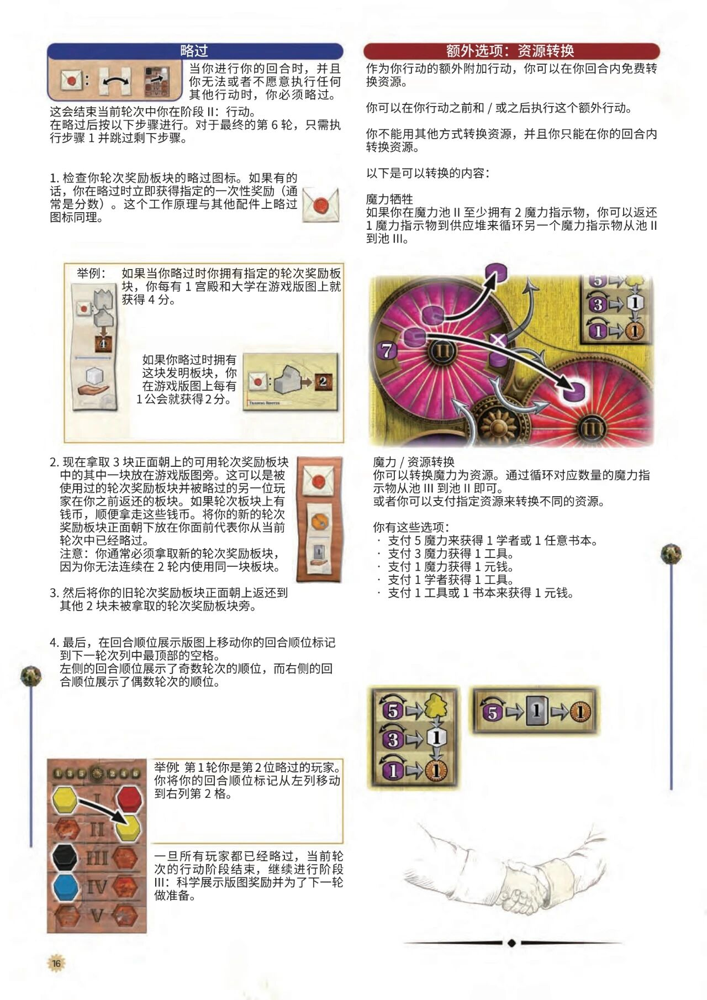
略过
〔图 左侧图标为火漆信封图标、带双向箭头的两块板块、以及回合顺位版图小图〕
当你进行你的回合时〔原文如此〕，并且你无法或者不愿意执行任何其他行动时，你必须略过。
这会结束当前轮次中你在阶段 II：行动。
在略过后按以下步骤进行。对于最终的 第 6 轮，只需执行步骤 1 并跳过剩下步骤。
1. 检查你轮次奖励板块的略过图标。如果有的话，你在略过时立刻获得指定的一次性奖励（通常是分数）。这个工作原理与其他配件上略过图标同理。
〔图 火漆信封略过图标〕
举例：如果当你略过时你拥有指定的轮次奖励板块，你每有 1 宫殿和大学在游戏版图上就获得 4 分。
如果你略过时拥有这块发明板块，你在游戏版图上每有 1 公会就获得 2 分。
〔图 左侧为轮次奖励板块，上绘略过图标、宫殿与大学图形、数字"4"；右下为"TRADEING ROUTES"〔原文如此〕发明板块，绘信封图标、建筑图形与箭头指向数字"2"〕
2. 现在拿取 3 块正面朝上的可用轮次奖励板块中的其中一块放在游戏版图旁。这可以是被使用过的轮次奖励板块并被略过的另一位玩家在你之前返还的板块〔原文如此〕。如果轮次板块上有钱币，顺便拿走这些钱币。将你的新的轮次奖励板块正面朝下放在你面前代表你从当前轮次中已经略过。
注意：你通常必须拿取新的轮次奖励板块，因为你无法连续在 2 轮内使用同一块板块。
〔图 木质框内自上而下三枚配件图：火漆信封、罗盘、手托白色圆柱〕
3. 然后将你的旧轮次奖励板块正面朝上返还到其他 2 块未被拿取的轮次奖励板块旁。
4. 最后，在回合顺位展示版图上移动你的回合顺位标记到下一轮次列中最顶部的空格。
左侧的回合顺位展示了奇数轮次的顺位，而右侧的回合顺位展示了偶数轮次的顺位。
〔图 回合顺位展示版图，顶部数字为"1 3 5"与"2 4 6"，左列为罗马数字 I–V 格，右列为对应格；黄色六边形标记经箭头从左列 I 行移到右列第 2 格，红、黑、蓝标记分别在左列 I、III、IV 行〕
举例：第 1 轮你是第 2 位略过的玩家。你将你的回合顺位标记从左列移动到右列第 2 格。
一旦所有玩家都已经略过，当前轮次的行动阶段结束，继续进行阶段 III：科学展示版图奖励并为了下一轮做准备。
额外选项：资源转换
作为你行动的额外附加行动，你可以在你回合内免费转换资源。
你可以在你行动之前和 / 或之后执行这个额外行动。
你不能用其他方式转换资源，并且你只能在你的回合内转换资源。
以下是可以转换的内容：
魔力牺牲
如果你在魔力池 II 至少拥有 2 魔力指示物，你可以返还 1 魔力指示物到供应堆来循环另一个魔力指示物从池 II 到池 III。
〔图 魔力循环版图局部，紫色魔力指示物沿箭头在魔力池 II、III 间移动，右侧有 5、3、1 数值与黄色学者、书本、钱币图形及转换箭头〕
魔力 / 资源转换
你可以转换魔力为资源。通过循环对应数量的魔力指示物从池 III 到池 II 即可。
或者你可以支付指定资源来转换不同的资源。
你有这些选项：
- 支付 5 魔力来获得 1 学者或 1 任意书本。
- 支付 3 魔力获得 1 工具。
- 支付 1 魔力获得 1 元钱。
- 支付 1 学者获得 1 工具。
- 支付 1 工具或 1 书本来获得 1 元钱。
〔图 两组转换图示：数字 5、3、1 的魔力格分别以箭头指向学者、工具、钱币图形；下方为铅笔素描的握手插图与装饰分隔线〕
〔页码：16〕
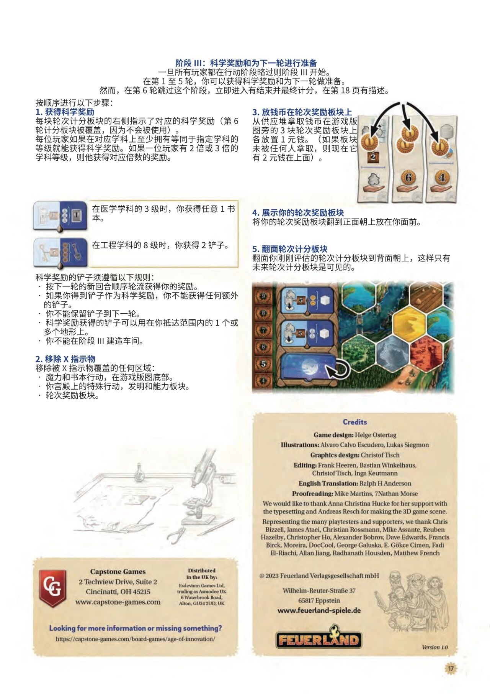
阶段 III：科学奖励和为下一轮做准备
一旦所有玩家都在行动阶段略过则阶段 III 开始。
在第 1 至 5 轮，你可以在获得科学奖励和为下一轮做准备。
然而，在第 6 轮跳过这个阶段，立即进入有结束并最终计分，在第 18 页有描述。〔原文如此〕
按顺序进行以下步骤：
1. 获得科学奖励
每块轮次计分板块的右侧指示了对应的科学奖励（第 6 轮计分板块被覆盖，因为不会被使用）。
每位玩家如果在对应学科上至少拥有等同于指定学科的等级就能获得科学奖励。如果一位玩家有 2 倍或 3 倍的学科等级，则他获得对应倍数的奖励。
〔图 两个示例框，各配一块轮次计分板块小图〕
- 在医学学科的 3 级时，你获得任意 1 本书。
- 在工程学科的 8 级时，你获得 2 铲子。
科学奖励的铲子须遵循以下规则：
- 按下一轮的新回合顺序轮流获得你的奖励。
- 如果你得到铲子作为科学奖励，你不能获得任何额外的铲子。
- 你不能保留铲子到下一轮。
- 科学奖励获得的铲子可以用在你抵达范围内的 1 个或多个地形上。
- 你不能在阶段 III 建造车间。
2. 移除 X 指示物
移除被 X 指示物覆盖的任何区域：
- 魔力和书本行动，在游戏版图底部。
- 你宫殿上的特殊行动，发明和能力板块。
- 轮次奖励板块。
3. 放钱币在轮次奖励板块上
从供应堆拿取钱币在游戏版图旁的 3 块轮次奖励板块上各放置 1 元钱。（如果板块未被任何人拿取，则现在它有 2 元钱在上面）。
〔图 三块轮次奖励板块，黑色箭头指向各板块上新放置的 1 元钱币；板块下部分别印有 2、6、4 数字的圆币和手托图案〕
4. 展示你的轮次奖励板块
将你的轮次奖励板块翻到正面朝上放在你面前。
5. 翻面轮次计分板块
翻面你刚刚评估的轮次计分板块到背面朝上，这样只有未来轮次计分板块是可见的。
〔图 游戏版图局部照片，左侧竖排标有 9、5、7、8、5 的圆形指示，中间两块轮次计分板块（分别印有数字 5），右侧为六边形地形板块；一个弯箭头指向一块翻面的板块〕
〔图 铅笔素描，桌上的图纸、烧瓶和显微镜〕
Credits
Game design: Helge Ostertag
Illustrations: Alvaro Calvo Escudero, Lukas Siegmon
Graphics design: Christof Tisch
Editing: Frank Heeren, Bastian Winkelhaus, Christof Tisch, Inga Keutmann
English Translation: Ralph H Anderson
Proofreading: Mike Martins, 7Nathan Morse
We would like to thank Anna Christina Hucke for her support with the typesetting and Andreas Resch for making the 3D game scene.
Representing the many playtesters and supporters, we thank Chris Bizzell, James Ataei, Christian Rossmann, Mike Assante, Reuben Hazelby, Christopher Ho, Alexander Bobrov, Dave Edwards, Francis Birck, Moreira, DocCool, George Galuska, E. Gökce Cimen, Fadi El-Riachi, Allan Jiang, Radhanath Housden, Matthew French
© 2023 Feuerland Verlagsgesellschaft mbH
Wilhelm-Reuter-Straße 37
65817 Eppstein
www.feuerland-spiele.de
〔图 FEUERLAND 标志；线描的三个人物素描〕
Version 1.0
出版社信息框
〔图 红盾形 CG 标志〕
Capstone Games
2 Techview Drive, Suite 2
Cincinatti, OH 45215〔原文如此〕
www.capstone-games.com
Distributed in the UK by:
Esdevium Games Ltd, trading as Asmodee UK
6 Waterbrook Road, Alton, GU34 2UD, UK
Looking for more information or missing something?
https://capstone-games.com/board-games/age-of-innovation/
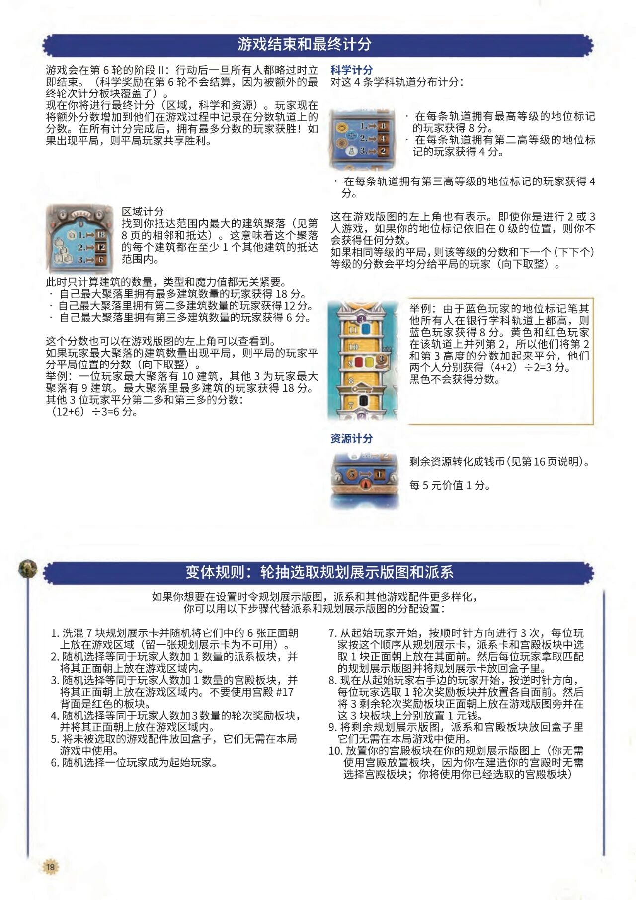
游戏结束和最终计分
游戏会在第 6 轮的阶段 II：行动后一旦所有人都略过时立即结束。（科学奖励在第 6 轮不会结算，因为被额外的最终轮次计分板块覆盖了）。
现在你将进行最终计分（区域，科学和资源）。玩家现在将额外分数增加到他们在游戏过程中记录在分数轨道上的分数。在所有计分完成后，拥有最多分数的玩家获胜！如果出现平局，则平局玩家共享胜利。
区域计分
〔图 游戏版图计分总览照片，显示 1.→18、2.→12、3.→6 及建筑图案〕
找到你抵达范围内最大的建筑聚落（见第 8 页的相邻和抵达）。这意味着这个聚落的每个建筑都在至少 1 个其他建筑的抵达范围内。
此时只计算建筑的数量，类型和魔力值都无关紧要。
- 自己最大聚落里拥有最多建筑数量的玩家获得 18 分。
- 自己最大聚落里拥有第二多建筑数量的玩家获得 12 分。
- 自己最大聚落里拥有第三多建筑数量的玩家获得 6 分。
这个分数也可以在游戏版图的左上角可以查看到。〔原文如此〕
如果玩家最大聚落的建筑数量出现平局，则平局的玩家平分平局位置的分数（向下取整）。
举例：一位玩家最大聚落有 10 建筑，其他 3 为玩家最大聚落有 9 建筑。〔原文如此〕最大聚落里最多建筑的玩家获得 18 分。其他 3 位玩家平分第二多和第三多的分数：（12+6) ÷3=6 分。
科学计分
对这 4 条学科轨道分布计分：
〔图 游戏版图计分总览照片，显示 1.→8、2.→4、3.→2 及各学科图案〕
- 在每条轨道拥有最高等级的地位标记的玩家获得 8 分。
- 在每条轨道拥有第二高等级的地位标记的玩家获得 4 分。
- 在每条轨道拥有第三高等级的地位标记的玩家获得 4 分。〔原文如此〕（旁边的版图照片印的是 3.→2）
这在游戏版图的左上角也有表示。即使你是进行 2 或 3 人游戏，如果你的地位标记依旧在 0 级的位置，则你不会获得任何分数。
如果相同等级的平局，则该等级的分数和下一个（下下个）等级的分数会平均分给平局的玩家（向下取整）。
〔图 银行学科轨道（高塔）照片，塔层印有 11、10、9、8、7 等数字，上面放有蓝、红、黄、黑等颜色的玩家地位标记〕
举例：由于蓝色玩家的地位标记笔其他所有人在银行学科轨道上都高，〔原文如此〕则蓝色玩家获得 8 分。黄色和红色玩家在该轨道上并列第 2，所以他们将第 2 和第 3 高度的分数加起来平分，他们两个人分别获得（4+2）÷2=3 分。黑色不会获得分数。
资源计分
〔图 游戏版图局部照片，显示"5→1"的兑换标识〕
剩余资源转化成钱币（见第 16 页说明）。
每 5 元价值 1 分。
变体规则：轮抽选取规划展示版图和派系
如果你想要在设置时令规划展示版图，派系和其他游戏配件更多样化，你可以用以下步骤代替派系和规划展示版图的分配设置：
1. 洗混 7 块规划展示卡并随机将它们中的 6 张正面朝上放在游戏区域（留一张规划展示卡为不可用）。
2. 随机选择等同于玩家人数加 1 数量的派系板块，并将其正面朝上放在游戏区域内。
3. 随机选择等同于玩家人数加 1 数量的宫殿板块，并将其正面朝上放在游戏区域内。不要使用宫殿 #17 背面是红色的板块。
4. 随机选择等同于玩家人数加 3 数量的轮次奖励板块，并将其正面朝上放在游戏区域内。
5. 将未被选取的游戏配件放回盒子，它们无需在本局游戏中使用。
6. 随机选择一位玩家成为起始玩家。
7. 从起始玩家开始，按顺时针方向进行 3 次，每位玩家按这个顺序从规划展示卡，派系卡和宫殿板块中选取 1 块正面朝上放在其面前。然后每位玩家拿取匹配的规划展示版图并将规划展示卡放回盒子里。
8. 现在从起始玩家右手边的玩家开始，按逆时针方向，每位玩家选取 1 轮次奖励板块并放置各自面前。然后将 3 剩余轮次奖励板块正面朝上放在游戏版图旁并在这 3 块板块上分别放置 1 元钱。
9. 将剩余规划展示版图，派系和宫殿板块放回盒子里它们无需在本局游戏中使用。〔原文如此〕（"盒子里"与"它们"之间无标点）
10. 放置你的宫殿板块在你的规划展示版图上（你无需使用宫殿放置板块，因为你在建造你的宫殿时无需选择宫殿板块；你将使用你已经选取的宫殿板块）
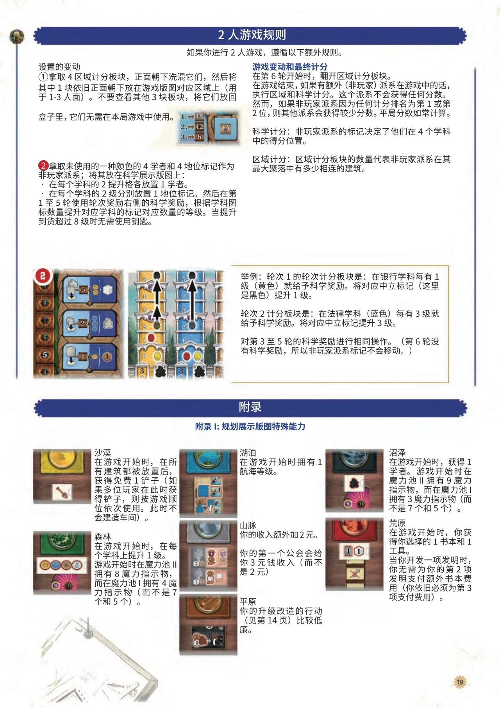
2 人游戏规则
如果你进行 2 人游戏，遵循以下额外规则。
设置的变动
① 拿取 4 区域计分板块，正面朝下洗混它们，然后将其中 1 块依旧正面朝下放在游戏版图对应区域上（用于 1-3 人面）。不要查看其他 3 块板块，将它们放回盒子里，它们无需在本局游戏中使用。
〔图 区域计分板块示意，1.→18、2.→12、3.→6 及一块蓝色板块背面〕
② 拿取未使用的一种颜色的 4 学者和 4 地位标记作为非玩家派系；将其放在科学展示版图上：
· 在每个学科的 2 提升格各放置 1 学者。
· 在每个学科的 2 级分别放置 1 地位标记。然后在第 1 至 5 轮使用轮次奖励右侧的科学奖励，根据学科图标数量提升对应学科的标记对应数量的等级。当提升到货超过 8 级时无需使用钥匙。〔原文如此〕
游戏变动和最终计分
在第 6 轮开始时，翻开区域计分板块。
在游戏结束，如果有额外（非玩家）派系在游戏中的话，执行区域和科学计分。这个派系不会获得任何分数。然而，如果非玩家派系因为任何计分排名为第 1 或第 2 位，则其他派系会获得较少分数。平局分数如常计算。
科学计分：非玩家派系的标记决定了他们在 4 个学科中的得分位置。
区域计分：区域计分板块的数量代表非玩家派系在其最大聚落中有多少相连的建筑。
〔图 示例照片，标注"2"，展示科学展示版图上中立学者的标记与提升箭头〕
举例：轮次 1 的轮次计分板块是：在银行学科每有 1 级（黄色）就给予科学奖励。将对应中立标记（这里是黑色）提升 1 级。
轮次 2 计分板块是：在法律学科（蓝色）每有 3 级就给予科学奖励。将对应中立标记提升 3 级。
对第 3 至 5 轮的科学奖励进行相同操作。（第 6 轮没有科学奖励，所以非玩家派系标记不会移动。）
附录
附录 I: 规划展示版图特殊能力
〔图 沙漠版图照片〕
沙漠
在游戏开始时，在所有建筑都被放置后，获得免费 1 铲子（如果多位玩家在此时获得铲子，则按游戏顺位依次使用。此时不会建造车间）。
〔图 湖泊版图照片〕
湖泊
在游戏开始时拥有 1 航海等级。
〔图 沼泽版图照片〕
沼泽
在游戏开始时，获得 1 学者。游戏开始时在魔力池 II 拥有 9 魔力指示物，而在魔力池 I 拥有 3 魔力指示物（而不是 7 个和 5 个）。
〔图 森林版图照片〕
森林
在游戏开始时，在每个学科上提升 1 级。
游戏开始时在魔力池 II 拥有 8 魔力指示物，而在魔力池 I 拥有 4 魔力指示物（而不是 7 个和 5 个）。
〔图 山脉版图照片〕
山脉
你的收入额外加 2 元。
你的第一个公会会给你 3 元钱收入（而不是 2 元）
〔图 荒原版图照片〕
荒原
在游戏开始时，你获得你选择的 1 书本和 1 工具。
当你开发一项发明时，你无需为你的第 2 项发明支付额外书本费用（你依旧必须为第 3 项支付费用）。
〔图 平原版图照片〕
平原
你的升级改造的行动（见第 14 页）比较低廉。
附录 II: 派系
〔图 派系卡，卡名 BLESSED，女性人物插画〕
圣者
在游戏开始时，圣者在每个学科各提升 1 级。
在阶段Ⅲ中，圣者视为学科额外高 3 级来获得其科学奖励。这也应用与 12 级以上。〔原文如此〕
举例：圣者的标记在法律学科内是 6 级。在法律学科内每有 3 级就获得 1 学者科学奖励。圣者获得 3 学者，因为他的法律知识视为额外高 3 级（6+3=9 级）
〔图 派系卡，卡名 FELINES，穿斗篷的猫形人物插画〕
养猫人
在游戏开始时，养猫人在银行和医学学科上分别提升 1 级。
每当养猫人设立一座城市，他可以在科学展示版图上提升一共 3 级（1 个学科或多个学科）并获得他选择的 1 书本。
〔图 派系卡，卡名 GOBLINS，哥布林插画〕
哥布林
在游戏开始时。哥布林在银行和工程学科上分别提升 1 级并获得 1 工具。〔原文如此〕
每当哥布林使用铲子时，他获得 2 元钱（每 1 铲子获得 2 元钱）。
〔图 派系卡，卡名 ILLUSIONISTS，施放魔法的法师插画〕
画家
在游戏开始时。画家在医学学科上分别提升 2 级。〔原文如此〕
每当画家执行魔力行动时，他可减免 1 魔力（行动可少移动 1 魔力指示物到池 I）。他也会获得额外 3 分，或在 5 人游戏时获得额外 4 分。
〔图 派系卡，卡名 INVENTORS，伏案人物插画〕
发明家
在游戏开始时，在放置第 1 车间和选择轮次奖励板块后，发明家也可以选取 1 块能力板块（包括在科学展示版图上对应等级提升和/或书本）。如果这个能力板块提供收入，则会在第一轮结算第一次。
〔图 派系卡，卡名 LIZARDS，蜥蜴人插画〕
蜥蜴
在游戏开始时，蜥蜴选择在一个学科上提升 2 级或者选择在 2 个学科上分布提升 1 级。
每当蜥蜴设立一座城市，他使用 1 免费铲子和 1 免费车间来执行改造并建造行动。车间无需在新改造地形格上建造，可以放在抵达范围内的任意原生地形格。否则，应用常规建造车间的规则。
〔图 派系卡，卡名 MOLES，鼹鼠人插画〕
鼹鼠
在游戏开始时，鼹鼠选择在工程学科上提升 2 级。
每当鼹鼠执行改造并建造行动时，他可以支付 1 工具跳过 1 地形或河流格（地道）。他每次使用地道时获得 4 分。跳过 1 格代表目标格无需与你的 1 个建筑相邻。只需要 1 相邻格与你的建筑相邻即可。目标格不能与鼹鼠的另一个建筑相邻。即使鼹鼠使用航海能力可抵达目标格他也可以使用地道能力。
在游戏结束时的区域计分中，鼹鼠的建筑可通过地道抵达的视为连接在一起（此时工具不会影响这个效果）。
行动阶段 II：作为一个行动，鼹鼠可以支付 1 工具来建造 1 桥梁。这个桥梁也可以建造在一个地形格上，也就是说桥梁左右的 1 个或多个六边形格也可以是地形格。
〔图 派系卡，卡名 MONKS，僧侣读书插画〕
僧侣
在游戏开始时，僧侣在法律学科提升 1 级。此外，当在游戏开始时放置第 1 个车间时，僧侣不会使用任何车间。取而代之的是，他只能放置他的大学。这个放置会在其他派系都放置完成后进行。同样的，僧侣通过建造这个大学来选择获取 1 块能力板块（并在科学展示版图提升对应等级和/或获得书本）。如果这个能力板块提供收入，则在第一轮会结算第一次。
〔图 派系卡，卡名 NAVIGATORS，水手人物插画〕
航海家
在游戏开始时，航海家在法律学科提升 3 级。
每当航海家在河流格子相邻的位置建造车间时，获得 2 分。
〔图 派系卡，卡名 OMAR，拱门中人物插画〕
奥马尔
在游戏开始时，航海家在银行和工程学科分别提升 1 级。〔原文如此〕
此外，在放置第 1 个车间时，奥马尔可以放置第 3 个建筑：中立塔楼：塔楼的魔力值为 2。奥马尔如常放置第 1 和第 2 个建筑。然后在所有其他派系都放置 2 个车间（之后轮到僧侣放置大学），奥马尔放置第 3 个建筑。他可以自由选择放置这 3 个建筑的顺序。
收入阶段 I：奥马尔获得 2 魔力和 2 元钱。
〔图 派系卡，卡名 PHILOSOPHERS，老者读书插画〕
哲学家
在游戏开始时，哲学家在银行学科提升 2 级。
每当哲学家获得能力板块时，他也会获得额外 1 块相同学科的书本（即使该能力板块不提供书本）。
行动阶段 II：哲学家的特殊行动是允许自己获得任意 1 书本。当执行此行动时用 X 指示物覆盖这个特殊行动。
〔图 派系卡，卡名 PSYCHICS，绿色光影中人物插画〕
通灵者
在游戏开始时，通灵者在银行和医学学科分别提升 1 级并获得 1 工具。
行动阶段 II：通灵者的特殊行动是首先获得 5 魔力然后立即执行下一个行动。
当执行此行动时用 X 指示物覆盖这个特殊行动。
〔图 跨页底部铅笔素描，一座多拱高架桥（桥梁）线稿〕
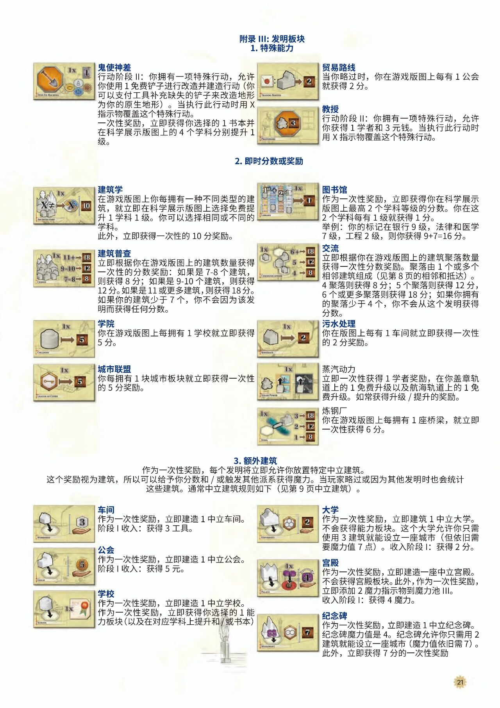
附录 III: 发明板块
1. 特殊能力
鬼使神差
〔图 发明板块卡图，橙色八角铲子图标，"1x"与数字 1 标记〕
行动阶段 II：你拥有一项特殊行动，允许你使用 1 免费铲子进行改造并建造行动（你可以支付工具补充缺失的铲子来改造地形为你的原生地形）。当执行此行动时用 X 指示物覆盖这个特殊行动。
一次性奖励，立即获得你选择的 1 书本并在科学展示版图上的 4 个学科分别提升 1 级。
贸易路线
〔图 发明板块卡图，信件、建筑与数字 2 标记〕
当你略过时，你在游戏版图上每有 1 公会就获得 2 分。
教授
〔图 发明板块卡图，橙色八角形内云朵与数字 3 标记〕
行动阶段 II：你拥有一项特殊行动，允许你获得 1 学者和 3 元钱。当执行此行动时用 X 指示物覆盖这个特殊行动。
2. 即时分数或奖励
建筑学
〔图 发明板块卡图，"X≠"与奖杯图案、"1x"与数字 10 标记〕
在游戏版图上你每拥有一种不同类型的建筑，就立即在科学展示版图上选择免费提升 1 学科 1 级。你可以选择相同或不同的学科。
此外，立即获得一次性的 10 分奖励。
建筑普查
〔图 发明板块卡图，建筑群图案，"1x"及"11+→18 / 9-10→12 / 7-8→8"标记〕
立即根据你在游戏版图上的建筑数量获得一次性的分数奖励：如果是 7-8 个建筑，则获得 8 分；如果是 9-10 个建筑，则获得 12 分。如果是 11 或更多建筑，则获得 18 分。如果你的建筑少于 7 个，你不会因为该发明而获得任何分数。
图书馆
〔图 发明板块卡图，科学展示版图缩略图，"1st + 2nd"、"1x"与数字 1 标记〕
作为一次性奖励，立即获得你在科学展示版图上最高 2 个学科等级的分数。你在这 2 个学科每有 1 级就获得 1 分。
举例：你的标记在银行 9 级，法律和医学 7 级，工程 2 级，则你获得 9+7=16 分。
交流
〔图 发明板块卡图，相邻建筑聚落图案，"1x"及"6+→18 / 5→12 / 4→8"标记〕
立即根据你在游戏版图上的建筑聚落数量获得一次性分数奖励。聚落由 1 个或多个相邻建筑组成（见第 8 页的相邻和抵达）。4 聚落则获得 8 分；5 个聚落则获得 12 分，6 个或更多聚落则获得 18 分；如果你拥有的聚落少于 4 个，你不会从这个发明获得分数。
学院
〔图 发明板块卡图，白色建筑图案，"1x"与数字 5 标记〕
你在游戏版图上每拥有 1 学校就立即获得 5 分。
污水处理
〔图 发明板块卡图，建筑与河道图案，"1x"与数字 2 标记〕
你在版图上每有 1 车间就立即获得一次性的 2 分奖励。
城市联盟
〔图 发明板块卡图，六边形钥匙图案，"1x"与数字 5 标记〕
你每拥有 1 块城市板块就立即获得一次性的 5 分奖励。
蒸汽动力
〔图 发明板块卡图，轨道与航海轨道升级图案，"1x"标记〕
立即一次性获得 1 学者奖励，在你盖章轨道上的 1 免费升级以及航海轨道上的 1 免费升级。如常获得升级 / 提升的奖励。
炼钢厂
〔图 发明板块卡图，桥梁跨河图案，"1x"及"3→18 / 2→12 / 1→8"标记〕
你在游戏版图上每拥有 1 座桥梁，就立即一次性获得 6 分。
3. 额外建筑
作为一次性奖励，每个发明将立即允许你放置特定中立建筑。这个奖励视为建筑，所以可以给予你分数和 / 或触发其他派系获得魔力。当玩家略过或因为其他发明时也会统计这些建筑。通常中立建筑规则如下（见第 9 页中立建筑）。
车间
〔图 发明板块卡图，建筑放置到版图的箭头图案，六边形数字 3 标记〕
作为一次性奖励，立即建造 1 中立车间。
阶段 I 收入：获得 3 工具。
公会
〔图 发明板块卡图，建筑放置到版图的箭头图案，圆形数字 5 标记〕
作为一次性奖励，立即建造 1 中立公会。
阶段 I 收入：获得 5 元。
学校
〔图 发明板块卡图，建筑放置到版图的箭头图案，"1x"与证书奖章图案〕
作为一次性奖励，立即建造 1 中立学校。
作为一次性奖励，立即获得你选择的 1 能力板块（以及在对应学科上提升和/或书本）
大学
〔图 发明板块卡图，建筑放置到版图的箭头图案，六边形城市图案与数字 2 标记〕
作为一次性奖励，立即建筑 1 中立大学。不会获得能力板块。这个大学允许你只需使用 3 建筑就能设立一座城市（但依旧需要魔力值 7 点）。收入阶段 I：获得 2 分。
宫殿
〔图 发明板块卡图，建筑放置到版图的箭头图案，紫色魔力指示物、"1x"、数字 4 与手掌图案〕
作为一次性奖励，立即建造一座中立宫殿。不会获得宫殿板块。此外，作为一次性奖励，立即添加 2 魔力指示物到魔力池 III。
收入阶段 I：获得 4 魔力。
纪念碑
〔图 发明板块卡图，建筑放置到版图的箭头图案，紫色魔力指示物、双环六边形图案与数字 7 标记〕
作为一次性奖励，立即建造 1 中立纪念碑。纪念碑魔力值是 4。纪念碑允许你只需用 2 建筑就能设立一座城市（魔力值依旧需 7）。此外，立即获得 7 分的一次性奖励
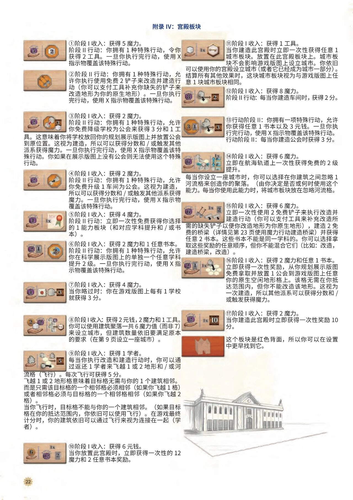
附录 IV：宫殿板块
〔图 宫殿板块卡图，紫色 5 魔力值手掌图案与橙色八角形数字 2 特殊行动图标〕
①阶段 I 收入：获得 5 魔力。
阶段 II 行动：你拥有 1 种特殊行动，令你获得 2 工具。一旦你执行完行动，使用 X 指示物覆盖该特殊行动。
〔图 宫殿板块卡图，橙色八角形双铲子图标〕
②阶段 II 行动：你拥有 1 种特殊行动，允许你执行使用免费 2 铲子来改造并建造行动（你可以支付工具补充你缺失的铲子来改造地形为你的原生地形）。一旦你执行完行动，使用 X 指示物覆盖该特殊行动。
〔图 宫殿板块卡图，紫色 2 魔力值与学校降级为公会的图案〕
③阶段 I 收入：获得 2 魔力。
阶段 II 行动：你拥有 1 种特殊行动，允许你免费降级学校为公会来获得 3 分和 1 工具。这意味着你将学校放回你的规划展示版图上并放置公会到原位置。这视为建造，所以可以获得分数和 / 或触发其他派系获得魔力。一旦你执行完行动，使用 X 指示物覆盖该特殊行动。你如果在展示版图上没有公会则无法使用这个特殊行动。
〔图 宫殿板块卡图，紫色 2 魔力值与车间升级图案〕
④阶段 I 收入：获得 2 魔力。
阶段 II 行动：你拥有 1 种特殊行动，允许你免费升级 1 车间为公会。这视为建造，所以可以获得分数和 / 或触发其他派系获得魔力。一旦你执行完行动，使用 X 指示物覆盖该特殊行动。
〔图 宫殿板块卡图，紫色 4 魔力值、"1x"与能力板块证书奖章图案〕
⑤阶段 I 收入：获得 4 魔力。
阶段 II 行动：立即一次性免费获得你选择的 1 能力板块（和对应学科提升和 / 或书本）。
〔图 宫殿板块卡图，紫色 2 魔力值、书本图标与橙色八角形数字 2 图标〕
⑥阶段 I 收入：获得 2 魔力和 1 任意书本。
阶段 II 行动：你拥有 1 种特殊行动，允许你在科学展示版图上的单独一个任意学科提升 2 级。一旦你执行完行动，使用 X 指示物覆盖该特殊行动。
〔图 宫殿板块卡图，紫色 4 魔力值与信件、学校、数字 3 图案〕
⑦阶段 I 收入：获得 4 魔力。
当你略过时：你在游戏版图上每有 1 学校就获得 3 分。
〔图 宫殿板块卡图，2 元钱、2 魔力、1 工具图案与建筑聚落（含数字 6）图案〕
⑧阶段 I 收入：获得 2 元钱，2 魔力和 1 工具。
你可以使用建筑聚落一共 6 魔力值（而非 7）来设立城市，但建筑数量依旧要满足原本的要求（在第 9 页设立一座城市）。
〔图 宫殿板块卡图，建筑飞越图案与数字 5〕
⑨阶段 I 收入：获得 1 学者。
每当你执行改造和建造行动时，你可以通过返还 1 学者来飞越 1 或 2 地形和 / 或河流格（飞行）。每次飞行可获得 5 分。
飞越 1 或 2 地形格意味着目标格无需与你的 1 个建筑相邻。而是只需该目标格的一个相邻格必须相邻（如果你飞越 1 格）或者相邻格必须与目标格的一个相邻格相邻（如果你飞越 2 格）。
当你飞行时，目标格不能与你的一个建筑相邻。（如果目标格在你的抵达范围内，你依旧可以使用飞行）。在游戏最终计分时，你的建筑依旧可以通过飞行来视为连接在一起（学者）。
〔图 宫殿板块卡图，金色 6、"1x"、紫色 12 魔力值与书本 2 图案〕
⑩阶段 I 收入：获得 6 元钱。
当你放置此宫殿时，立即获得一次性的 12 魔力和 2 任意书本奖励。
〔图 宫殿板块卡图，六边形建筑、"1x"与钥匙盾徽图案〕
⑪阶段 I 收入：获得 1 工具。
当你建造此宫殿时立即一次性获得任意 1 城市板块。放置在此宫殿板块上。城市板块不会影响游戏版图上设立城市。你依旧可以使用你的宫殿设立城市（或者它已经成为城市一部分）。结算所有其他效果时，这块城市板块视为与游戏版图上任意 1 块城市板块相同。
〔图 宫殿板块卡图，紫色 8 魔力值与建筑→数字 2 图案〕
⑫阶段 I 收入：获得 8 魔力。
阶段 II 行动：每当你建造车间时，获得 2 分。
〔图 宫殿板块卡图，橙色八角形数字 3 与书本 1 图案、建筑→数字 3 图案〕
⑬行动阶段 II：你拥有一项特殊行动，允许你获得任意 1 书本以及 3 元钱。一旦你执行完行动，使用 X 指示物覆盖该特殊行动。
行动阶段 II：每当你建造公会时获得 3 分。
〔图 宫殿板块卡图，紫色 6 魔力值、河流聚落图案与航海轨道"1x"图案〕
⑭阶段 I 收入：获得 6 魔力。
立即在航海轨道上一次性获得免费的 2 级提升。
每当你设立一座城市时，你可以选择在你建筑之间忽略 1 河流格来创造你的聚落。（由你决定是否或何时使用这个能力。每当你使用此能力时，将城市板块放在忽略河流格。〔原文如此：括号未闭合〕
〔图 宫殿板块卡图，紫色 6 魔力值、双铲子与两座桥梁图案、"1x"与书本 2 图案〕
⑮阶段 I 收入：获得 6 魔力。
立即一次性使用 2 免费铲子来执行改造并建造行动（你可以支付工具来补充改造所需的缺失铲子以便你改造地形为你原生地形），建造 2 免费的桥梁（详情见第 23 页使用魔力行动建造桥梁）并获得任意 2 书本。这些书本不能是同一学科的。你可以选择拿取这些奖励的任意顺序，但你不能混合它们（比如：改造，建造桥梁，改造）。
〔图 宫殿板块卡图，紫色 2 魔力值、书本 1、"1x"与公会放置到六边形版图的图案〕
⑯阶段 I 收入：获得 2 魔力和任意 1 书本。
立即获得一次性奖励，从你规划展示版图免费拿取并放置 1 公会到游戏版图上任意你的原生空闲地形格上。该格无需在你抵达范围内，但你不能改造该地形。这视为一次建造，所以其他派系可以获得分数和 / 或触发获得魔力。
〔图 宫殿板块卡图，紫色 2 魔力值、"1x"与数字 10〕
⑰阶段 I 收入：获得 2 魔力。
当你建造此宫殿时立即获得一次性奖励 10 分。
〔图 红色背面的宫殿板块，上有宫殿剪影〕
这个板块是红色背面，所以你可以在设置中更早找到它。
〔图 宫殿建筑的铅笔素描画〕
附录 V: 轮次奖励板块
〔图 轮次奖励板块，上有向下的箭头、"2"数字方块及小型建筑图〕
行动阶段 II：每当你建造 1 车间在河流格旁边，获得 2 分。
行动阶段 II：你的抵达范围临时增加 1 格（不会提升你的航海轨道标记）。如果你在第 6 轮拥有这块轮次奖励板块，提升的抵达范围不会用于最终计分。
〔图 轮次奖励板块，上有大学/宫殿图案、"1"数字方块及手掌托白色六边形图〕
每当你略过时：你在游戏版图上每拥有 1 座大学和 / 或宫殿就获得 4 分。
收入阶段 I：获得 1 工具。
〔图 轮次奖励板块，上有科学展示版图"1"级圆形标记、"2"数字六边形及手掌图〕
行动阶段 II：你拥有一项特殊行动：允许你免费在科学展示版图上提升任意 1 学科 1 级。一旦你执行完行动，使用 X 指示物覆盖该特殊行动。
收入阶段 I：获得任意 2 工具。
〔图 轮次奖励板块，上有学者图、"2"数字方块及手掌托云朵图〕
行动阶段 II：每当你派遣 1 学者，获得 2 分。这也会发生在你通过返还学者到供应堆来使用学者提升 1 级科学展示版图时。
收入阶段 I：获得 1 学者。
〔图 轮次奖励板块，上有铲子图、"1"书本方块及手掌图〕
行动阶段 II：你拥有一项特殊行动：允许你使用免费 1 铲子来执行改造并建造行动（你可以支付工具补充你缺失的铲子来改造地形为你的原生地形）。一旦你执行完行动，使用 X 指示物覆盖该特殊行动。
收入阶段 I：获得任意 1 书本。
〔图 轮次奖励板块，上有学校图案、科学展示版图"1"级圆形标记及"4"钱币图〕
每当你略过时：你在游戏版图上每拥有 1 座学校就在科学展示版图上提升任意 1 学科 1 级。如果你有多座学校，你可以选择提升相同或不同学科。
收入阶段 I：获得 4 元钱。
〔图 轮次奖励板块，上有公会建筑图及"3"魔力图〕
行动阶段 II：每当你建筑公会时获得 3 分。〔原文如此：动词"建筑"〕
收入阶段 I：获得 3 魔力。
〔图 轮次奖励板块，上有桥梁图、"1"书本方块及手掌图〕
行动阶段 II：你拥有一项特殊行动：允许你免费放置 1 桥梁（与对应魔力行动类似）。一旦你执行完行动，使用 X 指示物覆盖该特殊行动。
收入阶段 I：获得任意 1 书本。
〔图 轮次奖励板块，上有"4"魔力图与手掌图〕
收入阶段 I：获得 4 魔力和 2 元钱。
〔图 轮次奖励板块，上有"2"钱币图与手掌图〕
收入阶段 I：获得 6 元钱。
附录 VI：魔力和书本行动
〔图 两个相连齿轮形板块，左"1"书本、右紫色"5"魔力〕
返还任意学科 1 书本来获得 5 魔力。
〔图 两个相连齿轮形板块，左"2"书本、右"6"钱币〕
返还任意学科 2 书本来获得 6 元钱。
〔图 两个相连齿轮形板块，左"2"书本、右白色公会图与"2"数字方块〕
返还任意学科 2 书本，你在游戏版图上每有 1 公会就获得 2 分。
〔图 两个相连齿轮形板块，左"1"书本、右科学展示版图"2"级圆形标记〕
返还任意学科 1 书本来获得你在科学展示版图上单独 1 学科的 2 级提升。
〔图 两个相连齿轮形板块，左"2"书本、右车间升级为公会图〕
返还任意学科 2 书本来将你 1 车间免费升级为公会。这视为建造，所以其他派系可以获得分数和 / 或触发获得魔力。
〔图 两个相连齿轮形板块，左"3"书本、右三把铲子图〕
返还任意学科 3 书本来立即使用 3 免费铲子执行 1 改造并建造行动。
〔图 两个相连齿轮形板块，左紫色"3"魔力、右桥梁图〕
支付 3 魔力来建造一座桥梁。你必须至少拥有 1 建筑在 2 个地形格之中并且这里不能有已存在的桥梁。这个桥梁现在令这 2 个地形格相邻（见相邻和抵达，在第 8 页）。桥梁放置的选项在游戏版图上未完成的桥梁上有描述。
〔图 两个相连齿轮形板块，左紫色"3"魔力、右学者图〕
支付 3 魔力来获得 1 学者。
〔图 两个相连齿轮形板块，左紫色"4"魔力、右两件工具图〕
支付 4 魔力来获得 2 工具〔原文如此：句末无句号〕
〔图 两个相连齿轮形板块，左紫色"4"魔力、右"7"钱币图〕
支付 4 魔力来获得 7 元钱。
〔图 两个相连齿轮形板块，左紫色"4"魔力、右一把铲子图〕
支付 4 魔力来立即使用 1 免费铲子执行 1 改造并建造行动。（你可以支付工具补充你缺失的铲子来改造地形为你的原生地形。）
〔图 两个相连齿轮形板块，左紫色"6"魔力、右两把铲子图〕
支付 6 魔力来立即使用 2 免费铲子执行 1 改造并建造行动。（你可以支付工具补充你缺失的铲子来改造地形为你的原生地形。）
〔图 游戏版图局部，黄色和红色地形格上画有黑色对勾圈与红色叉号圈，演示桥梁放置位置〕
举例：左边两个位置是可以放置桥梁。由于左侧和中间格与你的公会相邻，所以你可以在此放置桥梁。
附录 VII：城市板块
〔图 六边形城市板块，钥匙图案，标"4"与"3"〕
当你拿取此城市板块时，获得 4 分和 3 工具。
〔图 六边形城市板块，钥匙图案，标"5"，上有两把铲子〕
当你拿取此城市板块时，获得 5 分并立即使用 2 免费铲子执行 1 改造并建造行动。（你可以支付工具补充你缺失的铲子来改造地形为你的原生地形。）
〔图 六边形城市板块，钥匙图案，标"5"与"2"书本〕
当你拿取此城市板块时，获得 5 分和任意 2 书本。
〔图 六边形城市板块，钥匙图案，标"6"与"6"钱币〕
当你拿取此城市板块时，获得 6 分和任意 6 元钱。
〔图 六边形城市板块，钥匙图案，标"7"，下有四枚学科标记〕
当你拿取此城市板块时，获得 7 分和在每个学科各提升 1 级。
〔图 六边形城市板块，钥匙图案，标"8"与"8"魔力〕
当你拿取此城市板块时，获得 8 分和 8 魔力。
〔图 六边形城市板块，钥匙图案，标"8"，上有学者图〕
当你拿取此城市板块时，获得 8 分和 1 学者。
〔图 页脚齿轮形页码"23"〕
附录 VI：能力板块〔原文如此：编号与第 23 页附录重复〕
〔图 能力板块，上有白色六边形、科学展示版图"1"级圆形标记及手掌图〕
收入阶段 I：获得 1 工具并在任意学科提升 1 级（如果你提升到 9 级，在此次提升后，直接获得对应收入。〔原文如此：缺右括号〕
〔图 能力板块，上有"3"分数方块、"2"钱币及手掌图〕
收入阶段 I：获得 3 分和 2 元钱。
〔图 能力板块，上有"1"书本、"1"魔力及手掌图〕
收入阶段 I：获得 1 任意书本和 1 魔力。
〔图 能力板块，标"1x"，上有白色六边形、"5"分数方块、"2"钱币〕
立即获得一次性的奖励：1 工具，5 分和 2 元钱。
〔图 能力板块，标"1x"，上有两把铲子图〕
即时：获得一次性使用 2 免费铲子执行 1 改造并建造行动。（你可以支付工具补充你缺失的铲子来改造地形为你的原生地形。）
〔图 能力板块，标"1x"，上有紫色侧楼、六边形地形格与"+1"标记〕
即时：获得 2 中立侧楼作为一次性奖励。在阶段 II 中可以作为一种行动，你可以放置 1 侧楼（不视为建造）到你的 1 个非侧楼建筑旁（可以是你的任何中立建筑）。侧楼提升该建筑魔力值 1 点（用于获得魔力和设立城市）。此外，建筑和侧楼视为 2 建筑来设立城市（通常需要 4 建筑来设立城市）。
〔图 能力板块，上有橙色"4"魔力圆盘〕
行动阶段 II：你拥有一项特殊行动，允许你获得 4 魔力。一旦你执行完行动，使用 X 指示物覆盖该特殊行动。
〔图 能力板块，上有学者版图图与"2"分数方块〕
每当你在阶段 II 使用派遣 1 学者行动，获得 2 分。这也会发生在你通过返还学者到供应堆来使用学者提升 1 级科学展示版图时。
〔图 能力板块，上有公会建筑图与"3"分数方块〕
每当你建造公会在游戏版图的边境格时，获得 3 分。边境格拥有至少 1 虚线边。
〔图 能力板块，上有紫色塔楼、"2"魔力、"2"钱币及手掌图〕
即时：建造 1 中立塔楼建筑作为一次性奖励。这个视为建造，其他玩家可获得魔力。遵循中立建筑建造规则（见第 9 页中立建筑）。塔楼的魔力值是 2。
收入阶段 I：获得 2 魔力和 2 元钱。
〔图 能力板块，上有城市板块钥匙图与"2"分数方块〕
当你略过时：你每拥有 1 城市板块就获得 2 分。
〔图 能力板块，上有科学展示版图图、X 标记图与"X"方块〕
当你略过时：根据你在科学展示版图上的等级获得分数。你在自己最低等级学科每有 1 级就获得 1 分。
举例：你的地位标记〔原文如此：疑为"地标标记"〕在银行的第 9 级，法律和医学的 7 级，工程的 2 级。所以你获得 2 分。
附录 VI：轮次计分板块〔原文如此：编号与前文附录重复〕
在游戏版图上的每块轮次计分板块代表游戏中的 1 轮计分规则。
板块左侧代表你在阶段 II 中使用特定行动可获得的分数。
板块右侧代表本轮结束的阶段 III 中的科学奖励。为了获得这些奖励，你必须提升你的学科等级来满足这些条件。
〔图 轮次计分板块，左半"2"，右半学者图〕
行动阶段 II：每当你建造车间时，获得 2 分。
轮次结束：你在法律学科内每有 3 级就获得 1 学者。
〔图 轮次计分板块，左半"2"，右半"4"魔力〕
行动阶段 II：每当你建造车间时，获得 2 分。
轮次结束：你在银行学科内每有 3 级就获得 4 魔力。
〔图 轮次计分板块，左半"3"，右半"1"书本〕
行动阶段 II：每当你建造公会时，获得 3 分。
轮次结束：你在法律学科内每有 3 级就获得 1 任意书本。
〔图 轮次计分板块，左半"3"，右半铲子图〕
行动阶段 II：每当你建造公会时，获得 3 分。
轮次结束：你在医学学科内每有 3 级就立即使用 1 铲子。（如果多位玩家使用铲子，按下一轮的玩家顺位依次进行，你不能建造车间）。
〔图 轮次计分板块，左半"4"，右半"1"钱币〕
行动阶段 II：每当你建造学校时，获得 4 分。
轮次结束：你在银行学科内每有 1 级就获得 1 元钱。
〔图 轮次计分板块，左半"5"，右半白色六边形〕
行动阶段 II：每当你建造宫殿或大学时，获得 5 分。
轮次结束：你在医学学科内每有 1 级就获得 1 元钱。
〔图 轮次计分板块，左半"5"，右半两枚钱币与白色六边形〕
行动阶段 II：每当你建造宫殿或大学时，获得 5 分。
轮次结束：你在银行学科内每有 2 级就获得 1 工具。
〔图 轮次计分板块，左半"2"，右半"1"钱币〕
这个板块不能用于第 5 或 6 轮。
行动阶段 II：每当你使用 1 铲子时，无论是从何种方式获得铲子，获得 2 分。如果你使用多个铲子，每个铲子都会计分。
轮次结束：你在法工程学科内每有 1 级就获得 1 元钱。〔原文如此："法工程学科"〕
〔图 轮次计分板块，左半"1"，右半"1"书本〕
行动阶段 II：每当你在科学展示版图上提升 1 级时，获得 1 分。如果你 1 个行动提升多级，每提升 1 级都会获得 1 分。
轮次结束：你在医学学科内每有 3 级就获得 1 任意书本。
〔图 轮次计分板块，左半"5"钥匙，右半铲子图〕
行动阶段 II：每当你拿取一块城市板块时，获得 5 分。
轮次结束：你在工程学科内每有 3 级就立即使用 1 铲子。（如果多位玩家使用铲子，按下一轮的玩家顺位依次进行，你不能建造车间）。
〔图 轮次计分板块，左半"3"，右半学者图〕
行动阶段 II：每当你在航海或改造轨道上提升你的标记时，获得 3 分。
轮次结束：你在工程学科内每有 3 级就获得 1 学者。
〔图 轮次计分板块，左半发明板块图与"5"，右半"3"魔力〕
行动阶段 II：每当你拿取发明板块时，获得 5 分。
轮次结束：你在法律学科内每有 2 级就获得 3 魔力。
最终轮次计分板块
在第 6 轮的行动阶段 II：你将拥有最终计分板块，这允许你获得额外分数而取代轮次结束科学奖励。其他其他〔原文如此："其他"重复〕最终轮次计分板块将以与具有相同图像的轮次计分板块相同的方式进行评分。
〔图 轮次计分板块，左半公会建筑图与"3"，右旁虚线边六边形轮廓图〕
这个奖励代表每当你建造公会在游戏版图的边境格时，获得 3 分。边境格拥有至少 1 虚线边。
〔图 页脚齿轮形页码"24"〕